<title>Operation Thunderbolt Storyboard</title>
<meta name="claude:viewport-fit-sides" content="cover">
<link rel="preconnect" href="https://fonts.googleapis.com"><link rel="stylesheet" href="https://fonts.googleapis.com/css2?family=Anton&family=Oswald:wght@400;600&family=Source+Serif+4:ital,wght@0,400;1,400&display=swap">
<style>
/* Layout: a production light-table. Acts as bands, shots as a 3-up grid of sketch + notes. */
:root { --bg:#efe8da; --paper:#faf6ee; --ink:#2b1e16; --muted:#6f6152; --line:#d6cbb6; --accent:#b8321f; --gold:#a8761a;
  --display:'Anton','Oswald',Impact,sans-serif; --label:'Oswald','Arial Narrow',sans-serif; --body:'Source Serif 4',Georgia,serif; }
@media (prefers-color-scheme: dark) { :root:not([data-theme="light"]) { --bg:#17130f; --paper:#221c16; --ink:#efe6d6; --muted:#a89984; --line:#3a3128; --accent:#e0644c; --gold:#e3b04f; color-scheme:dark } }
:root[data-theme="dark"] { --bg:#17130f; --paper:#221c16; --ink:#efe6d6; --muted:#a89984; --line:#3a3128; --accent:#e0644c; --gold:#e3b04f; color-scheme:dark }
body { background:var(--bg); color:var(--ink); font-family:var(--body); font-size:15px; line-height:1.5; padding-left:max(16px, env(safe-area-inset-left,0px)); padding-right:max(16px, env(safe-area-inset-right,0px)); padding-block:0 64px }
.top { max-width:1320px; margin:0 auto; padding-block:40px 20px; display:grid; gap:14px }
.kicker { font-family:var(--label); letter-spacing:.14em; text-transform:uppercase; font-size:12px; color:var(--accent) }
h1 { font-family:var(--display); font-weight:400; font-size:clamp(40px,7vw,84px); line-height:.95; margin:0; text-wrap:balance; letter-spacing:.01em }
.meta { font-family:var(--label); color:var(--muted); font-size:14px; display:flex; flex-wrap:wrap; gap:6px 18px }
.rules { max-width:70ch; color:var(--muted); margin:0 }
nav { position:sticky; top:env(safe-area-inset-top,0px); z-index:5; background:var(--bg); border-bottom:1px solid var(--line); max-width:1320px; margin:0 auto; display:flex; gap:4px 16px; overflow-x:auto; padding-block:10px; font-family:var(--label); font-size:13px; white-space:nowrap }
body::before { content:""; position:fixed; inset:0 0 auto; height:env(safe-area-inset-top,0px); z-index:10; background:var(--bg) }
nav a { color:var(--muted); text-decoration:none } nav a:hover, nav a:focus-visible { color:var(--accent); outline:none; text-decoration:underline }
.act { max-width:1320px; margin:0 auto; padding-block:34px 8px }
.acthead { display:flex; flex-wrap:wrap; align-items:baseline; gap:6px 16px; border-bottom:2px solid var(--ink); padding-bottom:8px; margin-bottom:18px }
.actno { font-family:var(--label); text-transform:uppercase; letter-spacing:.14em; font-size:12px; color:var(--accent) }
h2 { font-family:var(--display); font-weight:400; font-size:34px; margin:0; letter-spacing:.02em }
.period { font-family:var(--label); color:var(--muted); font-size:13px; margin-left:auto }
.grid { display:grid; grid-template-columns:repeat(auto-fill,minmax(min(100%,380px),1fr)); gap:22px }
.shot { background:var(--paper); border:1px solid var(--line); display:flex; flex-direction:column; min-width:0 }
.frame { position:relative; aspect-ratio:16/9; max-width:100%; background:#d8d0c0 }
.frame img { display:block; width:100%; height:100% ; object-fit:cover }
.sid, .dur { position:absolute; top:8px; font-family:var(--label); font-weight:600; font-size:13px; padding:2px 8px; background:#2b1e16; color:#f7f1e4; font-variant-numeric:tabular-nums }
.sid { left:8px } .dur { right:8px; background:rgba(43,30,22,.75) }
.notes { padding:14px 16px 16px; display:grid; gap:10px; min-width:0 }
.vo { margin:0; font-style:italic; font-size:16px }
dl { margin:0; display:grid; grid-template-columns:max-content 1fr; gap:4px 12px; font-size:14px }
dt { font-family:var(--label); text-transform:uppercase; letter-spacing:.1em; font-size:11px; color:var(--muted); padding-top:3px }
dd { margin:0; min-width:0 }
.tags { display:flex; flex-wrap:wrap; gap:6px }
.tag { font-family:var(--label); font-size:12px; border:1px solid var(--gold); color:var(--gold); padding:1px 8px }
@media (prefers-reduced-motion: no-preference) { html { scroll-behavior:smooth } }
</style>
<header class="top">
  <span class="kicker">3D documentary · storyboard v1</span>
  <h1>Operation Thunderbolt Storyboard</h1>
  <div class="meta"><span>154 shots</span><span>10 acts</span><span>≈ 19 min at script pace</span><span>Sketch frames from the 3D scenes; final renders are in colour</span></div>
  <p class="rules">Each panel is a sketch of the real 3D scene at about a third of the way through the shot, with the narration line, what is in frame, how the camera and characters move, and the sound. Violence is never shown: the raid uses silhouettes, flashes and cuts to black.</p>
</header>
<nav aria-label="Acts"><a href="#act0">0 · Cold Open</a><a href="#act1">1 · Flight 139</a><a href="#act2">2 · The Hijackers</a><a href="#act3">3 · Idi Amin&#x27;S Airport</a><a href="#act4">4 · The Selection</a><a href="#act5">5 · The War Room</a><a href="#act6">6 · Three Bad Plans</a><a href="#act7">7 · Four Hercules</a><a href="#act8">8 · The Fake Mercedes</a><a href="#act9">9 · Home</a></nav>
<section class="act" id="act0">
  <header class="acthead"><span class="actno">Act 0</span><h2>Cold Open</h2><span class="period">3 JULY 1976 · 1.0 min · 8 shots</span></header>
  <div class="grid"><article class="shot" id="s0-1">
  <div class="frame">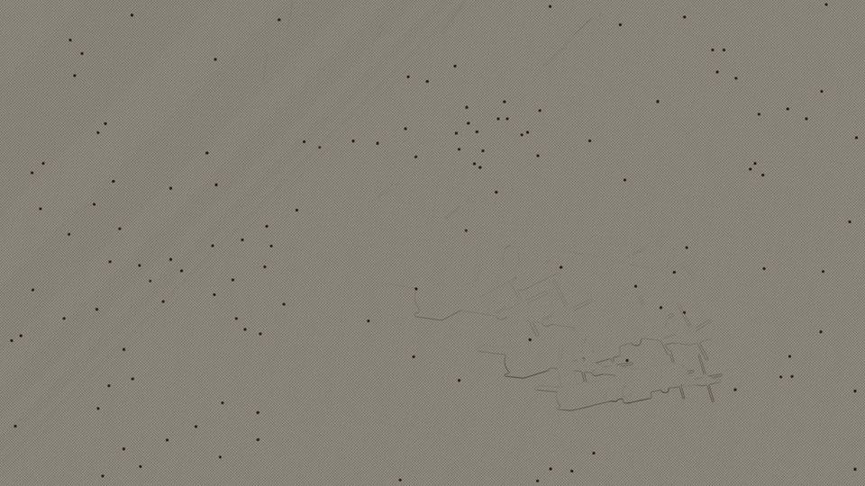<span class="sid">0.1</span><span class="dur">7.8s</span></div>
  <div class="notes">
    <p class="vo">“Eleven at night, 3 July 1976. Four huge military planes fly over Africa with every light switched off.”</p>
    <dl><dt>Frame</dt><dd>Four C-130 Hercules in a row, black against a starfield, cloud tops lit by the moon</dd><dt>Motion</dt><dd>slow lateral dolly along the formation, camera 30 m below the lead wing</dd><dt>Sound</dt><dd>low engine drone, wind</dd></dl>
    <div class="tags"><span class="tag">23:00 · 3 JULY 1976</span></div>
  </div>
</article><article class="shot" id="s0-2">
  <div class="frame">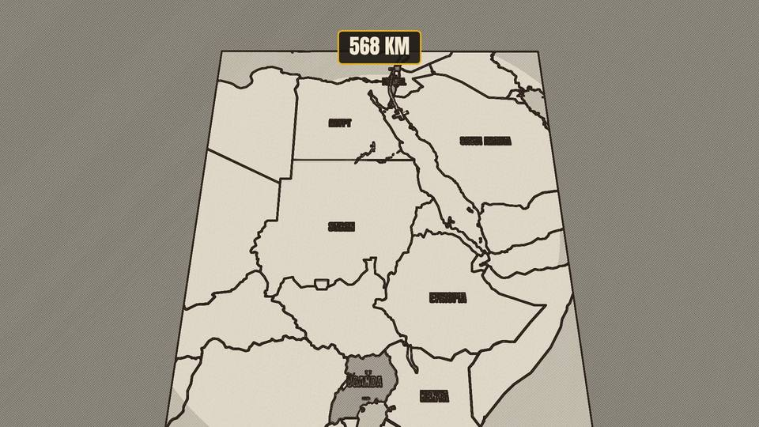<span class="sid">0.2</span><span class="dur">7.0s</span></div>
  <div class="notes">
    <p class="vo">“They have come four thousand kilometres from Israel, flying so low that no radar sees them.”</p>
    <dl><dt>Frame</dt><dd>Parchment map, Israel to Uganda; gold route ribbon grows down the Red Sea; &quot;4,000 KM&quot; counter ticks up</dd><dt>Motion</dt><dd>crane down from above Sinai, follow the ribbon south</dd><dt>Sound</dt><dd>map paper swipe, counter ticks</dd></dl>
    <div class="tags"><span class="tag">RED SEA</span><span class="tag">tally: 4,000 KM</span></div>
  </div>
</article><article class="shot" id="s0-3">
  <div class="frame">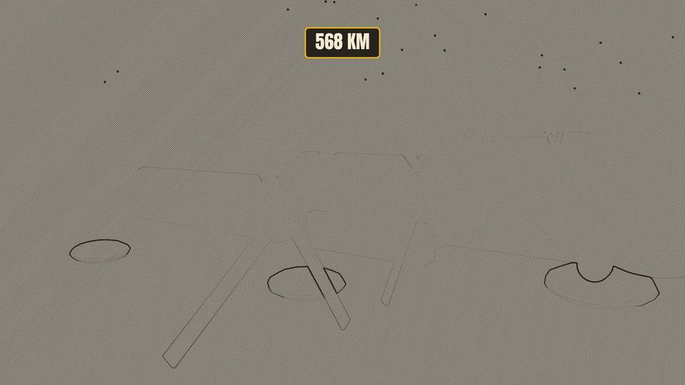<span class="sid">0.3</span><span class="dur">8.2s</span></div>
  <div class="notes">
    <p class="vo">“Near the target, the lead plane shuts down two of its four engines so it lands almost in silence.”</p>
    <dl><dt>Frame</dt><dd>Close on the wing: two propellers slow and stop, the other two keep turning</dd><dt>Motion</dt><dd>push in on the stopping propellers</dd><dt>Sound</dt><dd>engine spool down, propeller whoosh fading</dd></dl>
    
  </div>
</article><article class="shot" id="s0-4">
  <div class="frame">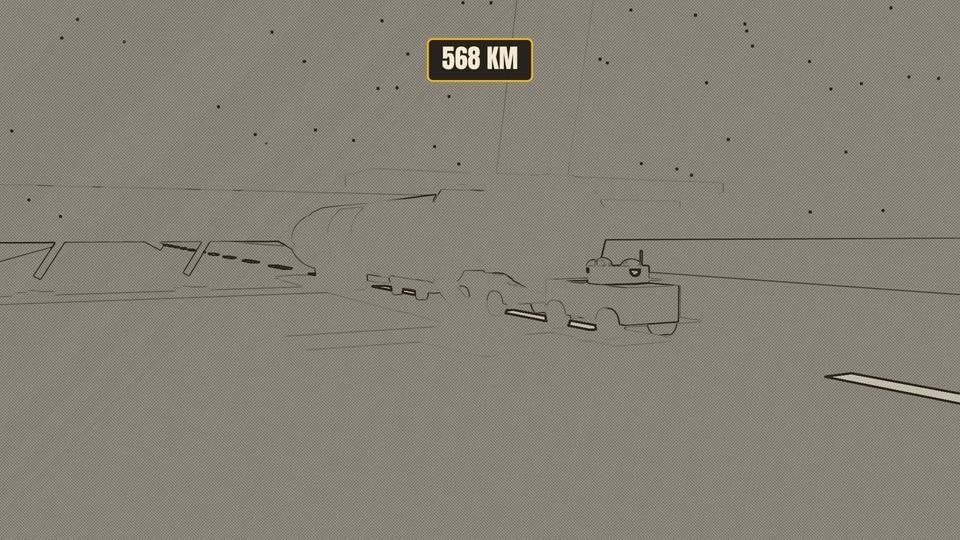<span class="sid">0.4</span><span class="dur">9.8s</span></div>
  <div class="notes">
    <p class="vo">“Its ramp opens while it is still rolling. Out comes a black Mercedes, built to look exactly like the car of Uganda&#x27;s president.”</p>
    <dl><dt>Frame</dt><dd>Ramp lowers on a dark runway; a black Mercedes and two Land Rovers roll out with flags on the bonnet</dd><dt>Motion</dt><dd>low angle from the runway, ramp opens toward camera</dd><dt>Sound</dt><dd>hydraulic whine, ramp clank, car engine</dd></dl>
    <div class="tags"><span class="tag">ENTEBBE · 23:01</span></div>
  </div>
</article><article class="shot" id="s0-5">
  <div class="frame">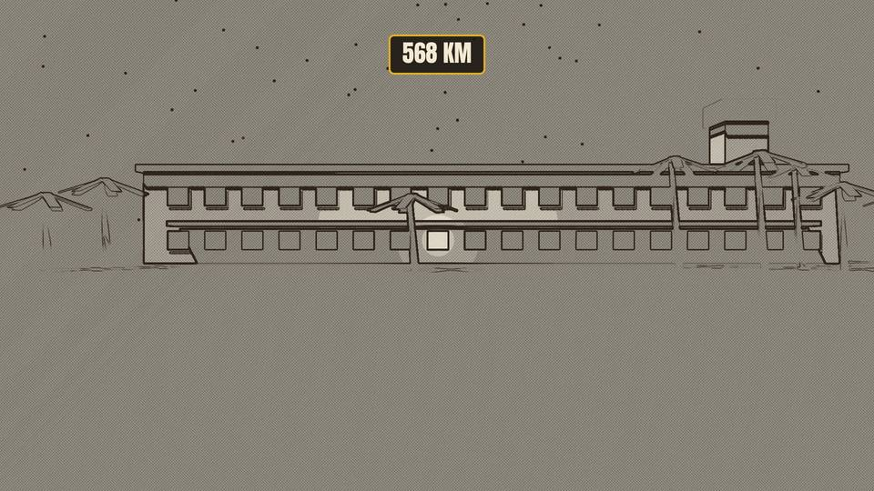<span class="sid">0.5</span><span class="dur">7.4s</span></div>
  <div class="notes">
    <p class="vo">“Inside an old airport terminal, a hundred and six hostages are waiting. Their deadline is tomorrow afternoon.”</p>
    <dl><dt>Frame</dt><dd>Old terminal at night, one window lit, silhouettes of people lying on the floor inside</dd><dt>Motion</dt><dd>slow push toward the lit window</dd><dt>Sound</dt><dd>clock tick, distant generator hum</dd></dl>
    <div class="tags"><span class="tag">tally: HOSTAGES 106</span></div>
  </div>
</article><article class="shot" id="s0-6">
  <div class="frame">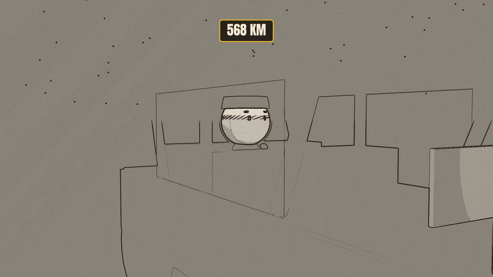<span class="sid">0.6</span><span class="dur">6.6s</span></div>
  <div class="notes">
    <p class="vo">“The man leading the first team is thirty years old. His name is Yonatan Netanyahu.”</p>
    <dl><dt>Frame</dt><dd>Yoni in olive uniform and cap, sitting in the Mercedes, eyes calm; name callout</dd><dt>Motion</dt><dd>over-the-shoulder close, slight handheld drift</dd><dt>Sound</dt><dd>car interior rumble, heartbeat</dd></dl>
    <div class="tags"><span class="tag">callout: YONATAN &quot;YONI&quot; NETANYAHU / COMMANDER, 30</span></div>
  </div>
</article><article class="shot" id="s0-7">
  <div class="frame">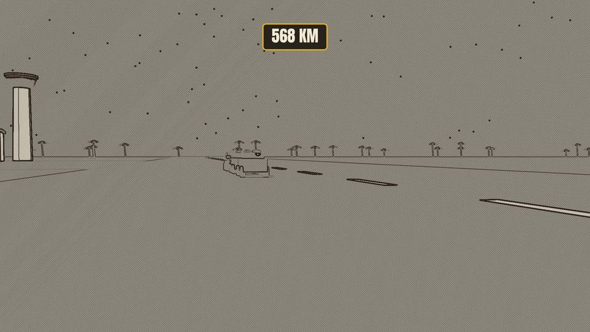<span class="sid">0.7</span><span class="dur">10.6s</span></div>
  <div class="notes">
    <p class="vo">“In the next ninety minutes, Israel will try something no army had done before. A rescue in an enemy country, four thousand kilometres from home.”</p>
    <dl><dt>Frame</dt><dd>The convoy moves toward the terminal, headlights off, the airport tower ahead</dd><dt>Motion</dt><dd>camera rises and pulls back to reveal the whole airport</dd><dt>Sound</dt><dd>drum hit, rising drone</dd></dl>
    
  </div>
</article><article class="shot" id="s0-8">
  <div class="frame">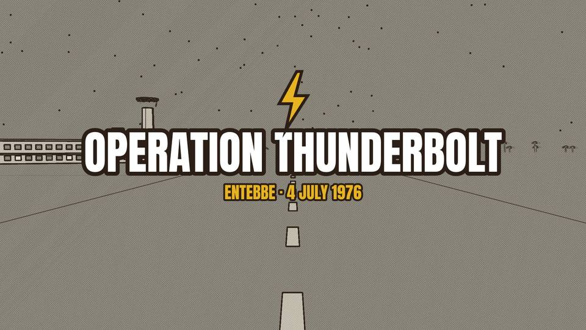<span class="sid">0.8</span><span class="dur">3.0s</span></div>
  <div class="notes">
    <p class="vo">“This is Operation Thunderbolt.”</p>
    <dl><dt>Frame</dt><dd>&quot;OPERATION THUNDERBOLT&quot; slams in over the dark runway, lightning bolt emblem</dd><dt>Motion</dt><dd>title slam 1.9x to 1x, then slow push</dd><dt>Sound</dt><dd>thunder boom, title slam</dd></dl>
    
  </div>
</article></div>
</section><section class="act" id="act1">
  <header class="acthead"><span class="actno">Act 1</span><h2>Flight 139</h2><span class="period">27 JUNE 1976 · 2.3 min · 19 shots</span></header>
  <div class="grid"><article class="shot" id="s1-1">
  <div class="frame">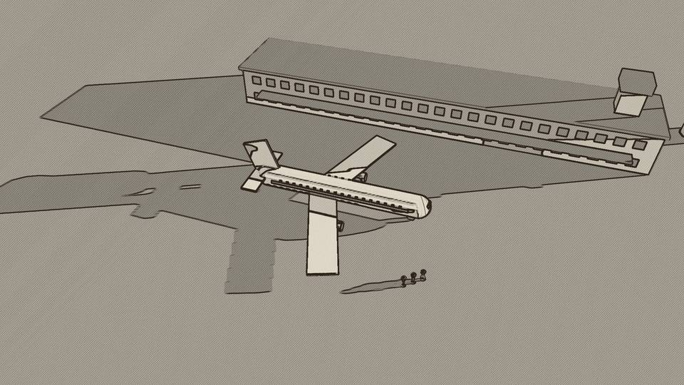<span class="sid">1.1</span><span class="dur">5.0s</span></div>
  <div class="notes">
    <p class="vo">“Let&#x27;s go back one week. Tel Aviv, Sunday 27 June 1976.”</p>
    <dl><dt>Frame</dt><dd>Ben Gurion airport, morning sun, an Air France Airbus A300 at the gate</dd><dt>Motion</dt><dd>crane down from sky to the jet</dd><dt>Sound</dt><dd>airport chime, birds</dd></dl>
    
  </div>
</article><article class="shot" id="s1-2">
  <div class="frame">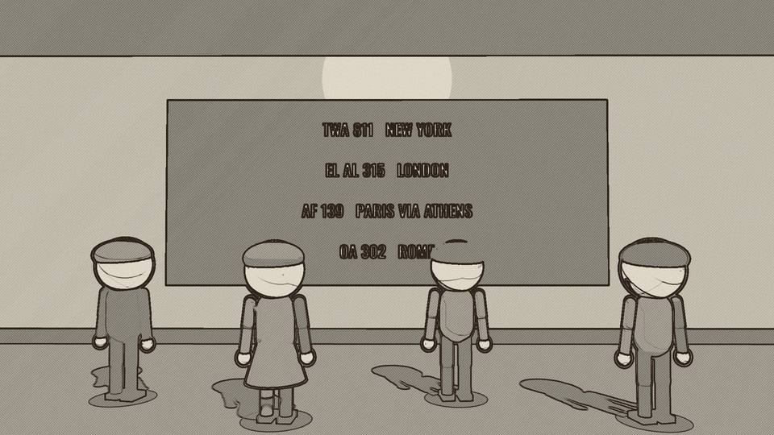<span class="sid">1.2</span><span class="dur">7.0s</span></div>
  <div class="notes">
    <p class="vo">“Air France Flight 139 is going to Paris, with one stop on the way in Athens.”</p>
    <dl><dt>Frame</dt><dd>Departure board flips to &quot;AF 139 PARIS VIA ATHENS&quot;</dd><dt>Motion</dt><dd>push in on the board</dd><dt>Sound</dt><dd>split-flap clatter</dd></dl>
    <div class="tags"><span class="tag">BEN GURION · 08:59</span></div>
  </div>
</article><article class="shot" id="s1-3">
  <div class="frame">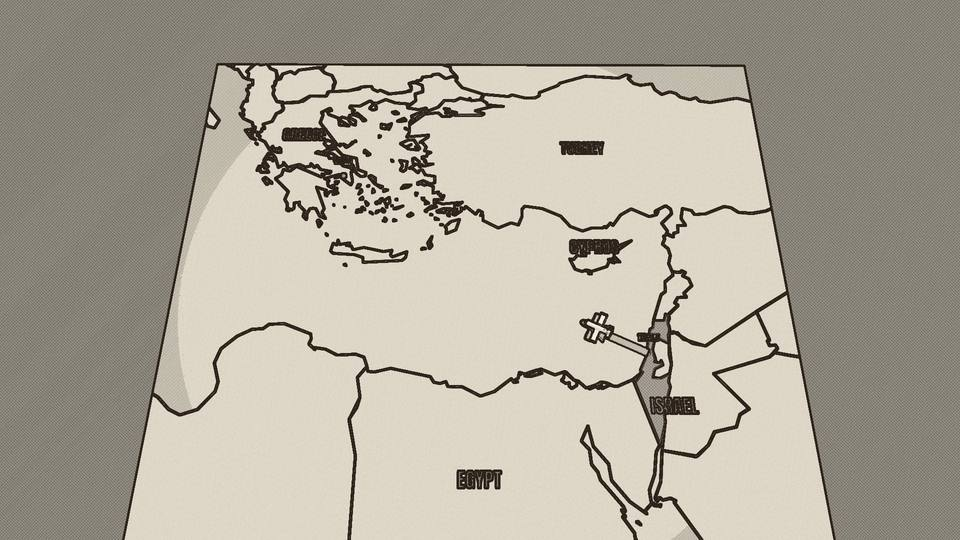<span class="sid">1.3</span><span class="dur">7.0s</span></div>
  <div class="notes">
    <p class="vo">“It leaves on time, just before nine in the morning, and turns west over the Mediterranean.”</p>
    <dl><dt>Frame</dt><dd>Map: Tel Aviv to Athens route ribbon, plane icon travelling</dd><dt>Motion</dt><dd>follow the plane icon</dd><dt>Sound</dt><dd>map swipe, jet whoosh</dd></dl>
    
  </div>
</article><article class="shot" id="s1-4">
  <div class="frame">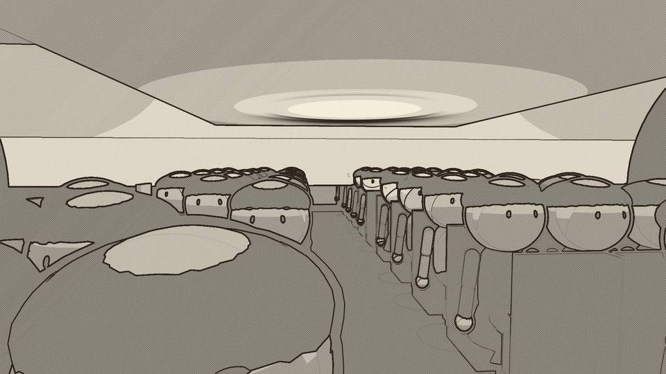<span class="sid">1.4</span><span class="dur">6.2s</span></div>
  <div class="notes">
    <p class="vo">“Most of the passengers are Israeli or Jewish. Families, students, pensioners going on holiday.”</p>
    <dl><dt>Frame</dt><dd>Cabin interior, passengers settling in, a child at the window, an old couple sharing a newspaper</dd><dt>Motion</dt><dd>lateral dolly down the aisle</dd><dt>Sound</dt><dd>cabin ding, chatter murmur</dd></dl>
    <div class="tags"><span class="tag">tally: ON BOARD 246</span></div>
  </div>
</article><article class="shot" id="s1-5">
  <div class="frame">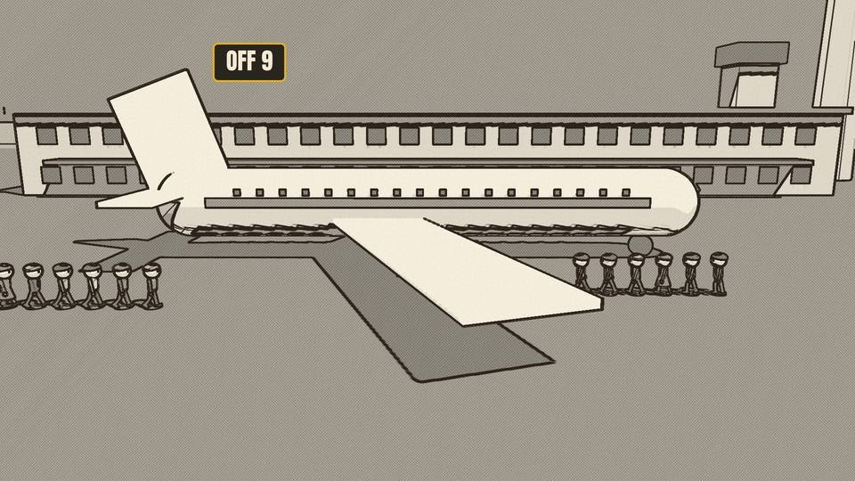<span class="sid">1.5</span><span class="dur">6.6s</span></div>
  <div class="notes">
    <p class="vo">“At half past eleven it lands in Athens. Thirty-eight people get off. Fifty-eight get on.”</p>
    <dl><dt>Frame</dt><dd>Plane at Athens gate, two counters: OFF 38, ON 58</dd><dt>Motion</dt><dd>slow push</dd><dt>Sound</dt><dd>landing thump, tyre squeal</dd></dl>
    <div class="tags"><span class="tag">ATHENS · 11:30</span></div>
  </div>
</article><article class="shot" id="s1-6">
  <div class="frame">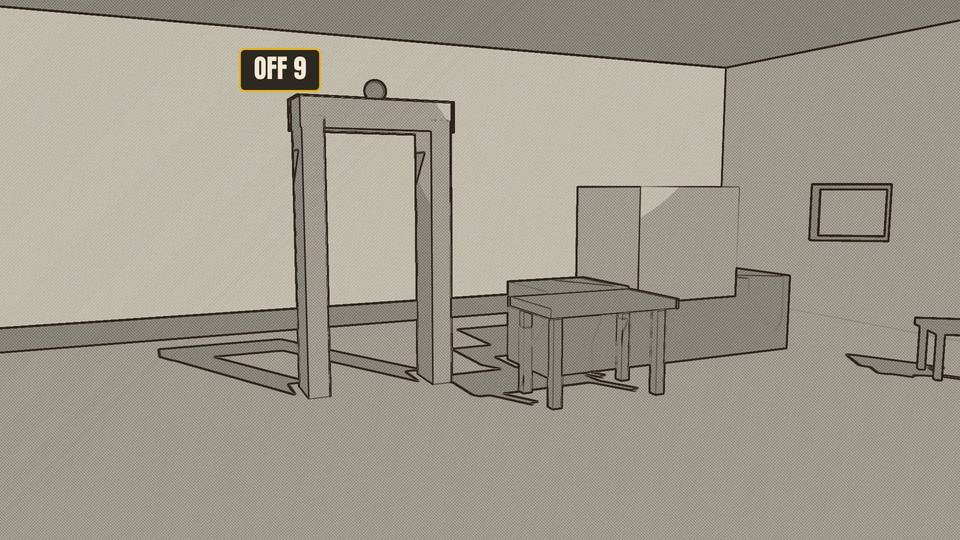<span class="sid">1.6</span><span class="dur">9.4s</span></div>
  <div class="notes">
    <p class="vo">“Athens airport in 1976 is not careful. On this day, a metal detector is broken, and nobody is watching the X-ray screen.”</p>
    <dl><dt>Frame</dt><dd>Security desk: a detector arch with a dead red light, an empty chair in front of the X-ray monitor</dd><dt>Motion</dt><dd>push in on the empty chair</dd><dt>Sound</dt><dd>electrical buzz, fan hum</dd></dl>
    
  </div>
</article><article class="shot" id="s1-7">
  <div class="frame">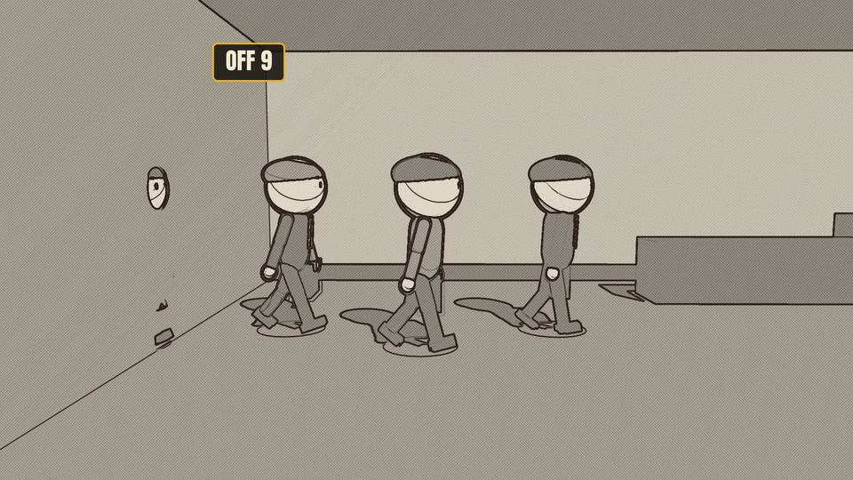<span class="sid">1.7</span><span class="dur">6.6s</span></div>
  <div class="notes">
    <p class="vo">“Four of the new passengers walk straight through with pistols and grenades in their bags.”</p>
    <dl><dt>Frame</dt><dd>Four figures carry bags past the empty X-ray desk; bags glow faintly red in an X-ray tint</dd><dt>Motion</dt><dd>tracking shot alongside them</dd><dt>Sound</dt><dd>footsteps, bag zip</dd></dl>
    
  </div>
</article><article class="shot" id="s1-8">
  <div class="frame">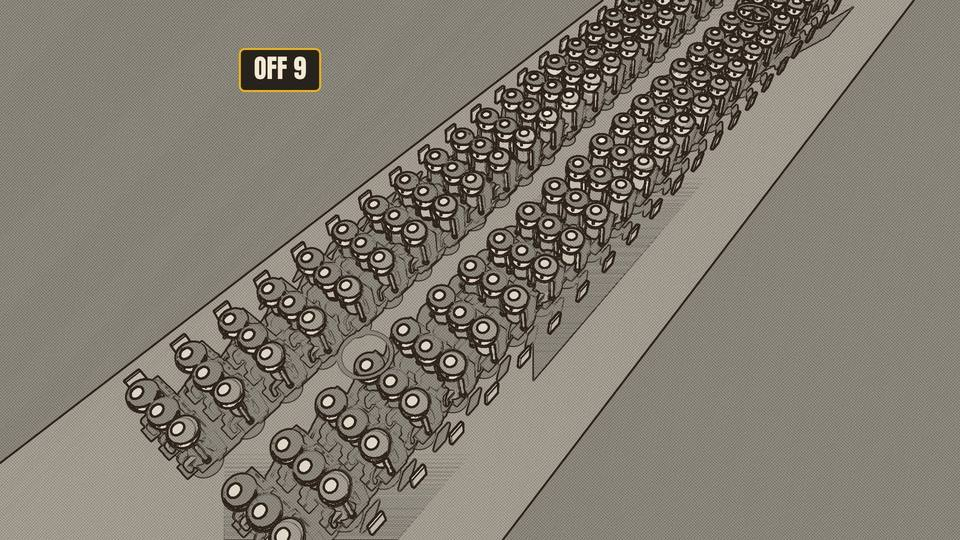<span class="sid">1.8</span><span class="dur">7.0s</span></div>
  <div class="notes">
    <p class="vo">“Two of them sit in first class. Two sit in economy. They look like everyone else.”</p>
    <dl><dt>Frame</dt><dd>Cutaway cabin, two figures highlighted in first class, two in economy</dd><dt>Motion</dt><dd>crane over the cutaway cabin</dd><dt>Sound</dt><dd>soft whoosh, highlight ping</dd></dl>
    
  </div>
</article><article class="shot" id="s1-9">
  <div class="frame">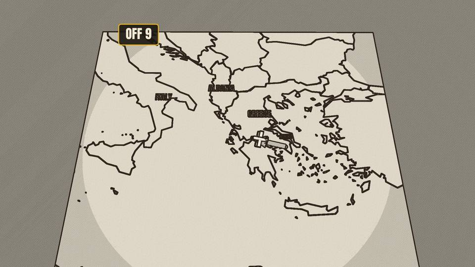<span class="sid">1.9</span><span class="dur">5.0s</span></div>
  <div class="notes">
    <p class="vo">“At ten past twelve, Flight 139 takes off again for Paris.”</p>
    <dl><dt>Frame</dt><dd>Map: route from Athens heading west</dd><dt>Motion</dt><dd>follow the plane icon</dd><dt>Sound</dt><dd>jet whoosh</dd></dl>
    <div class="tags"><span class="tag">ATHENS · 12:10</span></div>
  </div>
</article><article class="shot" id="s1-10">
  <div class="frame">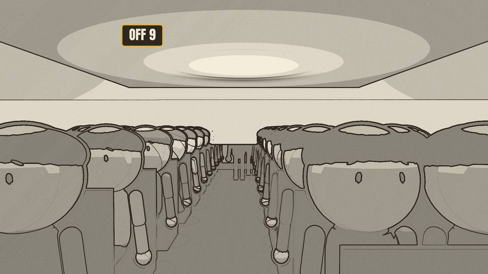<span class="sid">1.10</span><span class="dur">11.8s</span></div>
  <div class="notes">
    <p class="vo">“Eight minutes later, over the Gulf of Corinth, the two in first class stand up. Each has a pistol in one hand and a grenade in the other.”</p>
    <dl><dt>Frame</dt><dd>Silhouettes stand in the first class aisle; weapons shown only as dark shapes, nobody hurt</dd><dt>Motion</dt><dd>slow push from the back of the cabin</dd><dt>Sound</dt><dd>seatbelt click, sharp gasp</dd></dl>
    <div class="tags"><span class="tag">12:18</span></div>
  </div>
</article><article class="shot" id="s1-11">
  <div class="frame">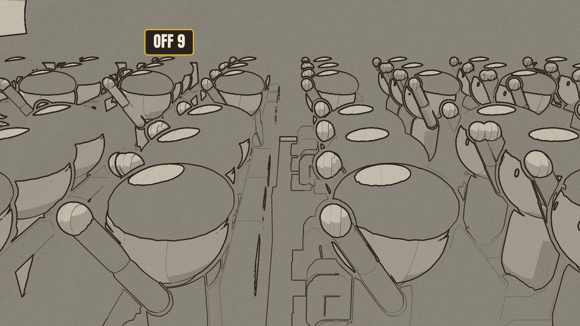<span class="sid">1.11</span><span class="dur">9.4s</span></div>
  <div class="notes">
    <p class="vo">“They run toward the cockpit. The crew and the front rows start screaming. At the back, nobody knows what is happening yet.”</p>
    <dl><dt>Frame</dt><dd>Split frame: panic at the front, calm at the back with a passenger reading</dd><dt>Motion</dt><dd>lateral dolly from front to back</dd><dt>Sound</dt><dd>screams muffled, music drop</dd></dl>
    
  </div>
</article><article class="shot" id="s1-12">
  <div class="frame">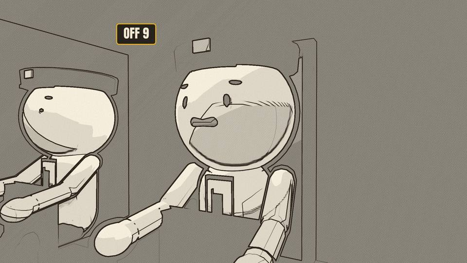<span class="sid">1.12</span><span class="dur">6.2s</span></div>
  <div class="notes">
    <p class="vo">“In the cockpit are the captain, Michel Bacos, the co-pilot, and the flight engineer.”</p>
    <dl><dt>Frame</dt><dd>Cockpit, three crew figures; name callout on the captain</dd><dt>Motion</dt><dd>push in on Bacos</dd><dt>Sound</dt><dd>cockpit beeps, engine hum</dd></dl>
    <div class="tags"><span class="tag">callout: MICHEL BACOS / CAPTAIN, AIR FRANCE</span></div>
  </div>
</article><article class="shot" id="s1-13">
  <div class="frame">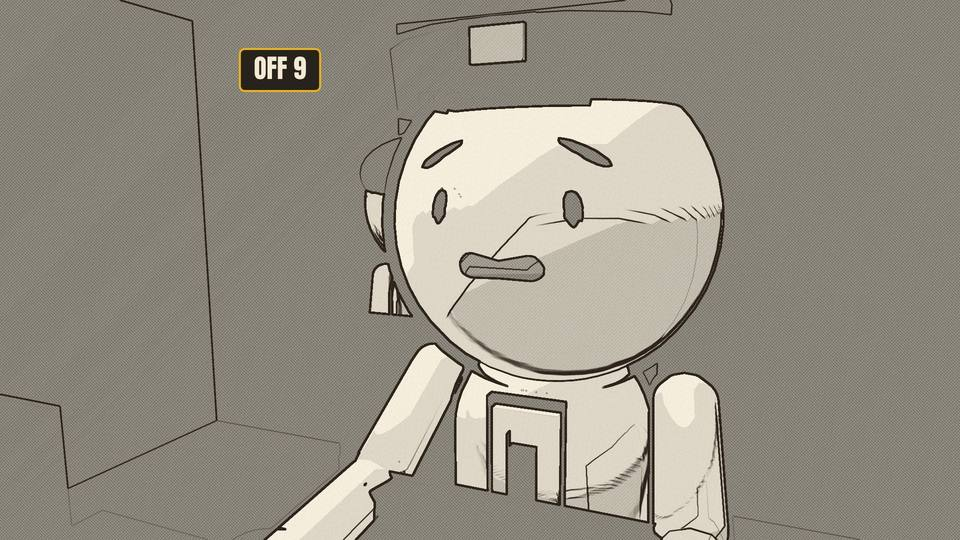<span class="sid">1.13</span><span class="dur">5.0s</span></div>
  <div class="notes">
    <p class="vo">“Bacos hears the screams and sends the engineer out to look.”</p>
    <dl><dt>Frame</dt><dd>Engineer stands, unlatches the cockpit door</dd><dt>Motion</dt><dd>over-the-shoulder from Bacos</dd><dt>Sound</dt><dd>latch click, door creak</dd></dl>
    
  </div>
</article><article class="shot" id="s1-14">
  <div class="frame">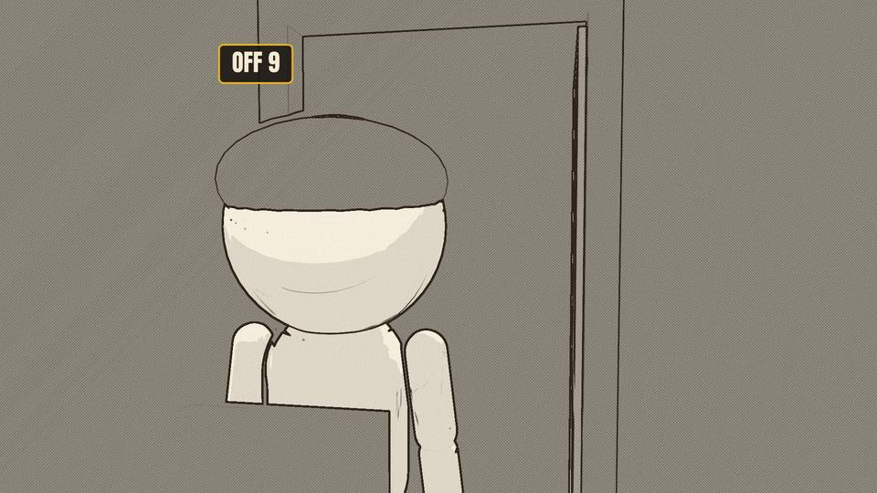<span class="sid">1.14</span><span class="dur">7.8s</span></div>
  <div class="notes">
    <p class="vo">“The door opens, and a man is standing right there, with a gun pointed at the engineer&#x27;s head.”</p>
    <dl><dt>Frame</dt><dd>Door opens on a silhouette with a raised dark shape; cut before any contact</dd><dt>Motion</dt><dd>quick push, then hold</dd><dt>Sound</dt><dd>door bang, low hit</dd></dl>
    
  </div>
</article><article class="shot" id="s1-15">
  <div class="frame">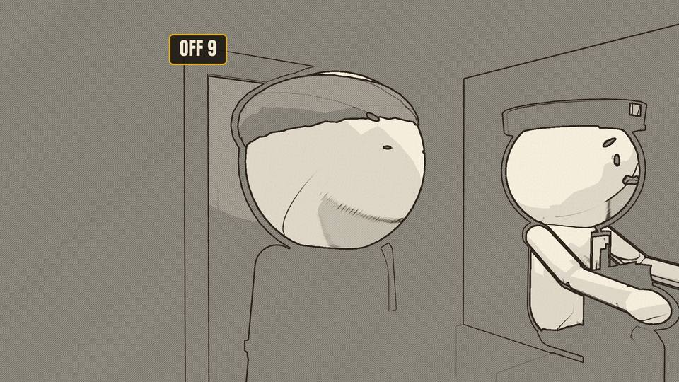<span class="sid">1.15</span><span class="dur">7.0s</span></div>
  <div class="notes">
    <p class="vo">“He is Wilfried Böse, a German. He walks into the cockpit and takes the co-pilot&#x27;s seat.”</p>
    <dl><dt>Frame</dt><dd>Böse in the co-pilot seat; name callout in red second line</dd><dt>Motion</dt><dd>slow orbit around the seat</dd><dt>Sound</dt><dd>seat creak, low drone</dd></dl>
    <div class="tags"><span class="tag">callout: WILFRIED BÖSE / HIJACKER, GERMANY</span></div>
  </div>
</article><article class="shot" id="s1-16">
  <div class="frame">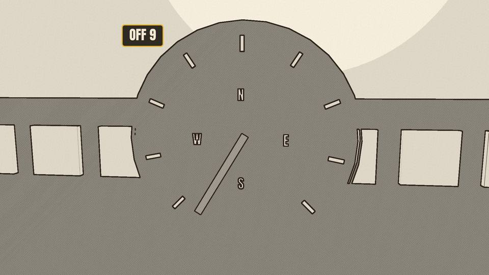<span class="sid">1.16</span><span class="dur">7.0s</span></div>
  <div class="notes">
    <p class="vo">“He tells Bacos to turn the plane south. Do what I say, and nobody gets hurt.”</p>
    <dl><dt>Frame</dt><dd>Böse points at the compass; heading needle swings from west to south</dd><dt>Motion</dt><dd>close on the attitude and heading display</dd><dt>Sound</dt><dd>instrument whir, needle tick</dd></dl>
    
  </div>
</article><article class="shot" id="s1-17">
  <div class="frame">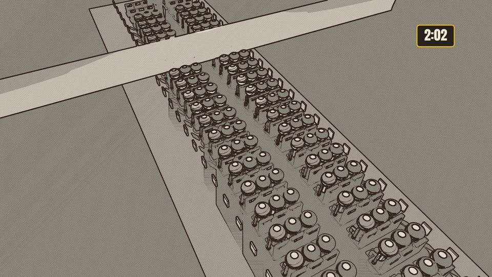<span class="sid">1.17</span><span class="dur">8.6s</span></div>
  <div class="notes">
    <p class="vo">“At the back, the other two hijackers take control of economy. In about three minutes, the whole plane is theirs.”</p>
    <dl><dt>Frame</dt><dd>Two hijackers at the back of economy; a &quot;3:00&quot; stopwatch runs down</dd><dt>Motion</dt><dd>crane over the cabin cutaway</dd><dt>Sound</dt><dd>stopwatch tick, alarm sting</dd></dl>
    
  </div>
</article><article class="shot" id="s1-18">
  <div class="frame">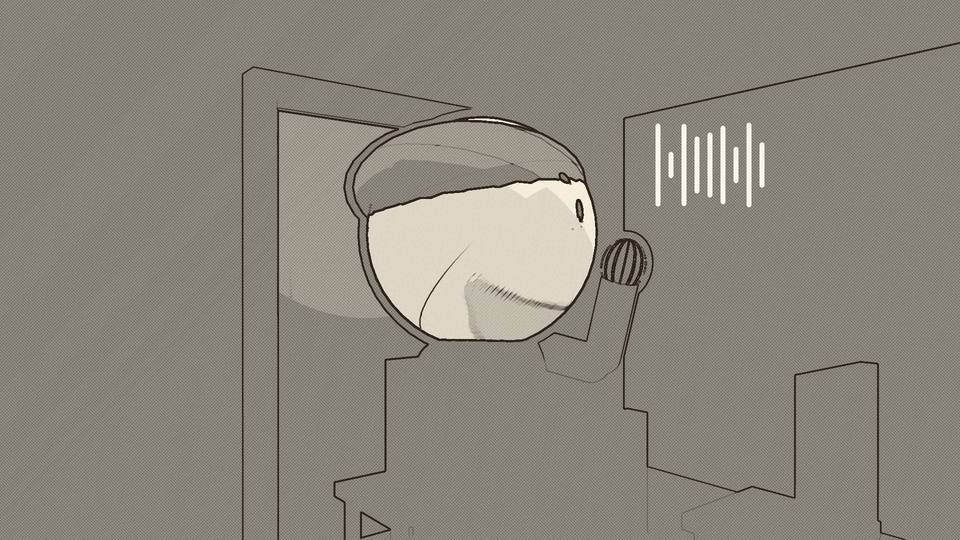<span class="sid">1.18</span><span class="dur">11.0s</span></div>
  <div class="notes">
    <p class="vo">“Then Böse picks up the captain&#x27;s microphone. He says the plane is hijacked, and that he is the captain now. He says it again in French.”</p>
    <dl><dt>Frame</dt><dd>Böse with the cabin microphone; speech waveform icon over the cabin</dd><dt>Motion</dt><dd>push in on the microphone</dd><dt>Sound</dt><dd>PA crackle, cabin hush</dd></dl>
    <div class="tags"><span class="tag">12:21</span></div>
  </div>
</article><article class="shot" id="s1-19">
  <div class="frame">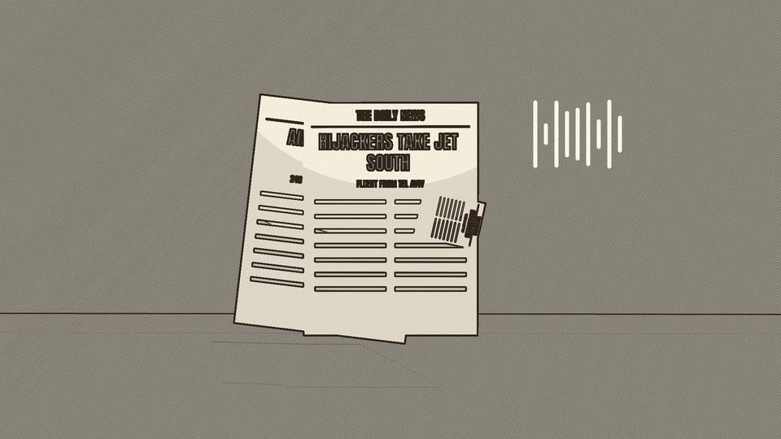<span class="sid">1.19</span><span class="dur">6.2s</span></div>
  <div class="notes">
    <p class="vo">“By the next morning, Flight 139 is on front pages all over the world.”</p>
    <dl><dt>Frame</dt><dd>Newspapers spin in and stack: &quot;AIR FRANCE JET HIJACKED&quot;, &quot;246 HOSTAGES&quot;</dd><dt>Motion</dt><dd>newspaper spins, slow push</dd><dt>Sound</dt><dd>paper spin whooshes, press thud</dd></dl>
    
  </div>
</article></div>
</section><section class="act" id="act2">
  <header class="acthead"><span class="actno">Act 2</span><h2>The Hijackers</h2><span class="period">27 JUNE 1976 · 1.7 min · 13 shots</span></header>
  <div class="grid"><article class="shot" id="s2-1">
  <div class="frame">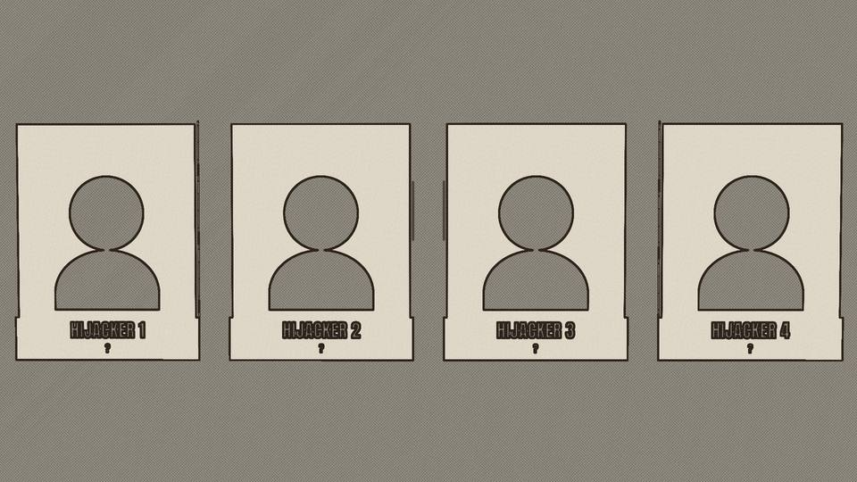<span class="sid">2.1</span><span class="dur">5.0s</span></div>
  <div class="notes">
    <p class="vo">“Meanwhile, the world asks a question. Who are these four people?”</p>
    <dl><dt>Frame</dt><dd>Four silhouette cards flip in a row</dd><dt>Motion</dt><dd>card flips, slow push</dd><dt>Sound</dt><dd>card flips</dd></dl>
    
  </div>
</article><article class="shot" id="s2-2">
  <div class="frame">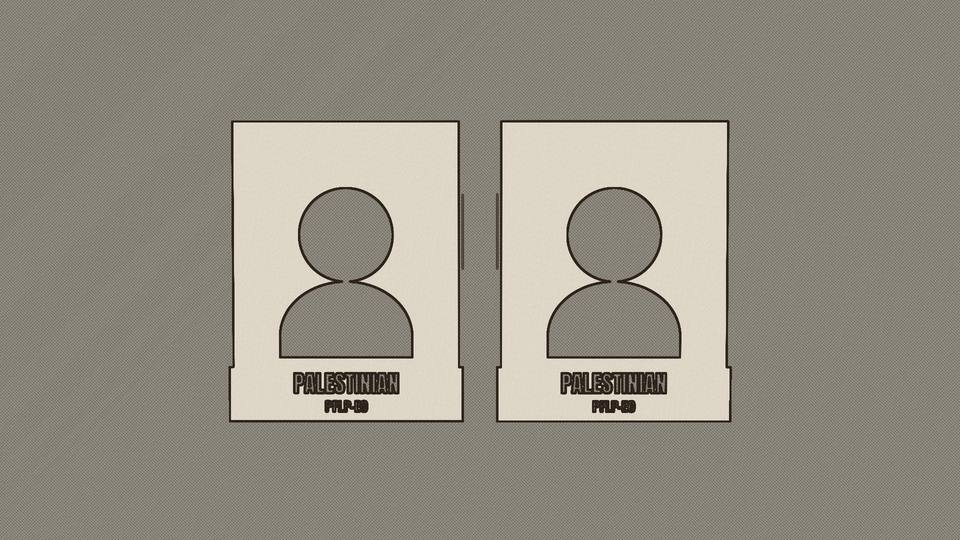<span class="sid">2.2</span><span class="dur">10.2s</span></div>
  <div class="notes">
    <p class="vo">“Two are Palestinian, from a group that split off the Popular Front for the Liberation of Palestine. It is called the PFLP External Operations.”</p>
    <dl><dt>Frame</dt><dd>Two silhouette cards with the group name</dd><dt>Motion</dt><dd>card highlight</dd><dt>Sound</dt><dd>ink stamp</dd></dl>
    <div class="tags"><span class="tag">callout: PFLP-EO / PALESTINIAN GROUP</span></div>
  </div>
</article><article class="shot" id="s2-3">
  <div class="frame">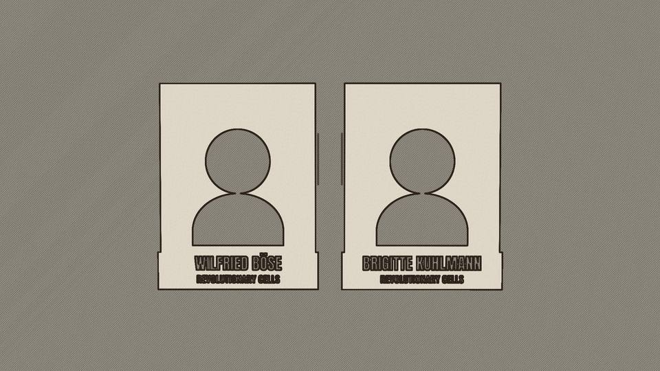<span class="sid">2.3</span><span class="dur">7.8s</span></div>
  <div class="notes">
    <p class="vo">“The other two are German. Wilfried Böse and Brigitte Kuhlmann, from a far-left group called the Revolutionary Cells.”</p>
    <dl><dt>Frame</dt><dd>Böse and Kuhlmann cards, generic house-style figures</dd><dt>Motion</dt><dd>card highlight</dd><dt>Sound</dt><dd>ink stamp</dd></dl>
    <div class="tags"><span class="tag">callout: BRIGITTE KUHLMANN / HIJACKER, GERMANY</span></div>
  </div>
</article><article class="shot" id="s2-4">
  <div class="frame">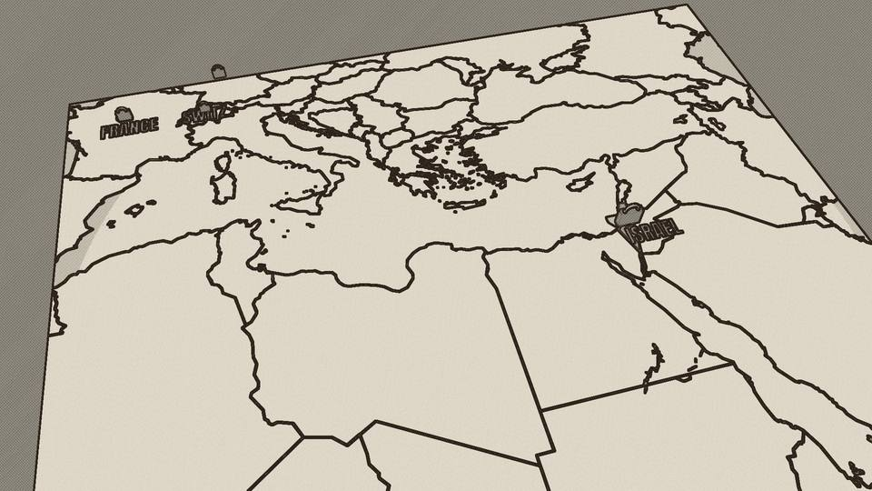<span class="sid">2.4</span><span class="dur">8.6s</span></div>
  <div class="notes">
    <p class="vo">“Many of their comrades are in prison. Most of them in Israel, others in France, West Germany, Switzerland and Kenya.”</p>
    <dl><dt>Frame</dt><dd>Map with prison icons; Israel glows brightest</dd><dt>Motion</dt><dd>camera drifts across Europe, the Middle East and Africa</dd><dt>Sound</dt><dd>padlock clicks</dd></dl>
    
  </div>
</article><article class="shot" id="s2-5">
  <div class="frame">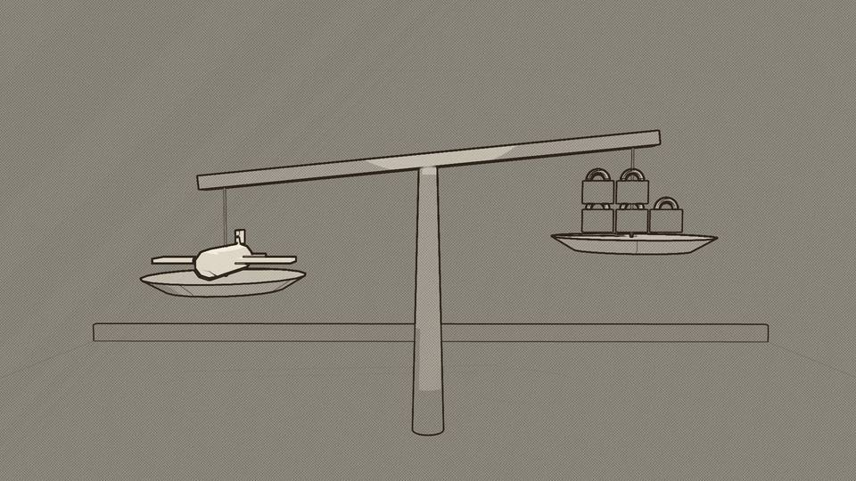<span class="sid">2.5</span><span class="dur">7.8s</span></div>
  <div class="notes">
    <p class="vo">“The plan is simple and cruel. Take a plane full of hostages and trade them for the prisoners.”</p>
    <dl><dt>Frame</dt><dd>Plane icon on one side of a scale, prison padlocks on the other</dd><dt>Motion</dt><dd>scale tips slowly</dd><dt>Sound</dt><dd>scale creak, low boom</dd></dl>
    
  </div>
</article><article class="shot" id="s2-6">
  <div class="frame">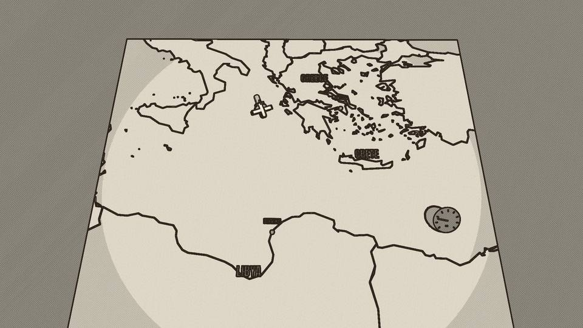<span class="sid">2.6</span><span class="dur">6.2s</span></div>
  <div class="notes">
    <p class="vo">“At three in the afternoon the jet reaches Libya. The fuel is running low.”</p>
    <dl><dt>Frame</dt><dd>Map: plane icon reaching Benghazi; fuel gauge needle near empty</dd><dt>Motion</dt><dd>follow plane, push in on Benghazi</dd><dt>Sound</dt><dd>fuel warning beep</dd></dl>
    <div class="tags"><span class="tag">BENGHAZI · 15:00</span></div>
  </div>
</article><article class="shot" id="s2-7">
  <div class="frame">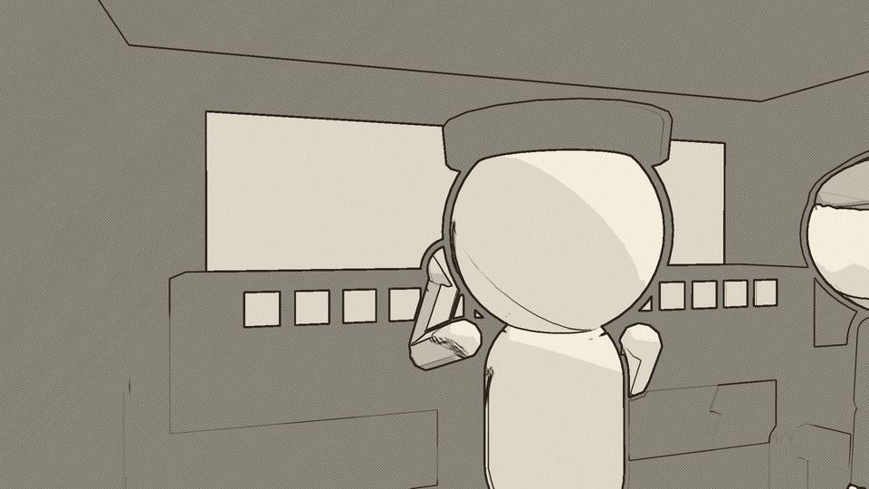<span class="sid">2.7</span><span class="dur">7.4s</span></div>
  <div class="notes">
    <p class="vo">“Bacos tells the control tower in Benghazi it is land here or crash. Libya lets them land.”</p>
    <dl><dt>Frame</dt><dd>Cockpit radio exchange, tower silhouette through the window</dd><dt>Motion</dt><dd>over-the-shoulder at the radio</dd><dt>Sound</dt><dd>radio static, tower voice tone</dd></dl>
    
  </div>
</article><article class="shot" id="s2-8">
  <div class="frame">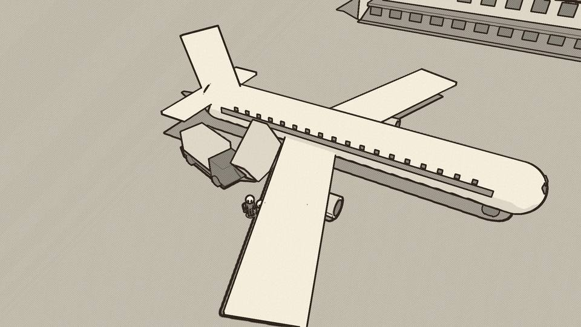<span class="sid">2.8</span><span class="dur">8.2s</span></div>
  <div class="notes">
    <p class="vo">“On the ground, the hijackers relax. They walk off the plane and meet Libyan officials. Passengers are given food.”</p>
    <dl><dt>Frame</dt><dd>Plane on hot tarmac, hijackers chatting with officials, trays passed into the cabin</dd><dt>Motion</dt><dd>wide crane down</dd><dt>Sound</dt><dd>heat shimmer hum, distant chatter</dd></dl>
    
  </div>
</article><article class="shot" id="s2-9">
  <div class="frame">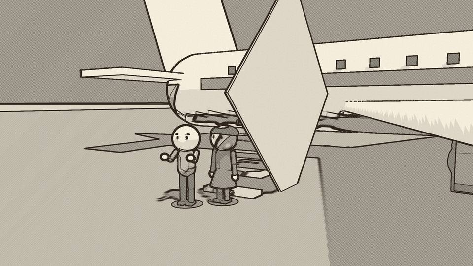<span class="sid">2.9</span><span class="dur">13.4s</span></div>
  <div class="notes">
    <p class="vo">“One passenger, a young woman, tells them she is pregnant and losing her baby. They let her go. She was not really losing the baby. It was a trick, and it worked.”</p>
    <dl><dt>Frame</dt><dd>A woman helped down the stairs; a small &quot;her claim at the time&quot; chip</dd><dt>Motion</dt><dd>slow push</dd><dt>Sound</dt><dd>stairs clank, soft music sting</dd></dl>
    <div class="tags"><span class="tag">chip: SHE PRETENDED, SHE WAS RELEASED</span></div>
  </div>
</article><article class="shot" id="s2-10">
  <div class="frame">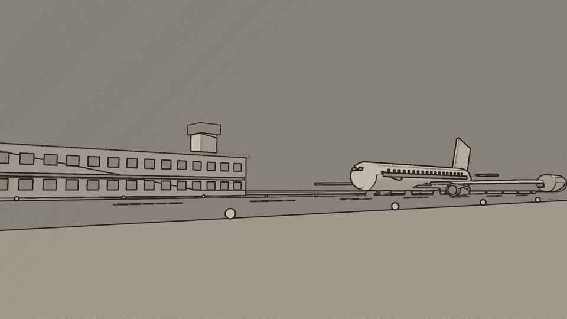<span class="sid">2.10</span><span class="dur">6.6s</span></div>
  <div class="notes">
    <p class="vo">“After about seven hours and a full tank of fuel, the plane takes off again.”</p>
    <dl><dt>Frame</dt><dd>Fuel truck pulls away, jet takes off at dusk</dd><dt>Motion</dt><dd>low angle takeoff</dd><dt>Sound</dt><dd>jet roar</dd></dl>
    
  </div>
</article><article class="shot" id="s2-11">
  <div class="frame">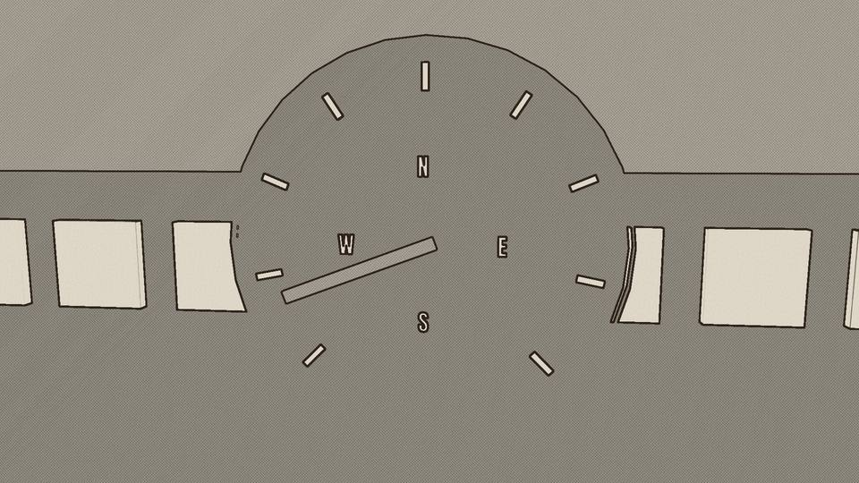<span class="sid">2.11</span><span class="dur">5.4s</span></div>
  <div class="notes">
    <p class="vo">“Soon after takeoff, Böse tells the captain to fly south. To Uganda.”</p>
    <dl><dt>Frame</dt><dd>Heading needle swings south again</dd><dt>Motion</dt><dd>close on the instruments</dd><dt>Sound</dt><dd>needle tick, drone</dd></dl>
    
  </div>
</article><article class="shot" id="s2-12">
  <div class="frame">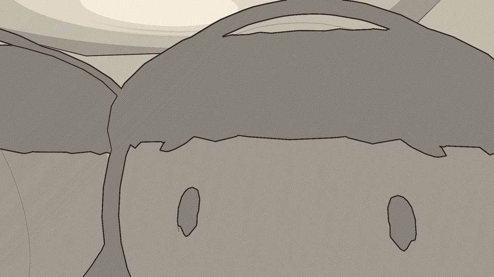<span class="sid">2.12</span><span class="dur">6.6s</span></div>
  <div class="notes">
    <p class="vo">“When the cabin hears the word Uganda, the fear gets worse. Especially for the Israelis.”</p>
    <dl><dt>Frame</dt><dd>Passengers&#x27; faces, worried brows, a hand gripping an armrest</dd><dt>Motion</dt><dd>slow lateral dolly</dd><dt>Sound</dt><dd>heartbeat, cabin hush</dd></dl>
    
  </div>
</article><article class="shot" id="s2-13">
  <div class="frame">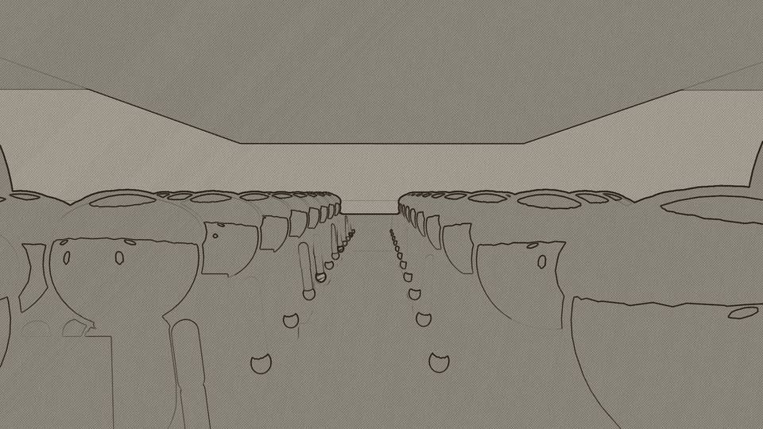<span class="sid">2.13</span><span class="dur">6.6s</span></div>
  <div class="notes">
    <p class="vo">“Nobody knows what will happen next. And not knowing is its own kind of fear.”</p>
    <dl><dt>Frame</dt><dd>Dark cabin, reading lights going off one by one</dd><dt>Motion</dt><dd>slow push down the aisle</dd><dt>Sound</dt><dd>light clicks, low pad</dd></dl>
    
  </div>
</article></div>
</section><section class="act" id="act3">
  <header class="acthead"><span class="actno">Act 3</span><h2>Idi Amin&#x27;S Airport</h2><span class="period">28 JUNE 1976 · 1.9 min · 15 shots</span></header>
  <div class="grid"><article class="shot" id="s3-1">
  <div class="frame">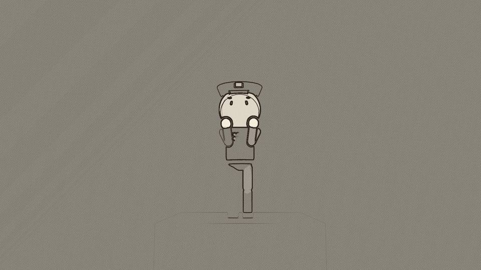<span class="sid">3.1</span><span class="dur">4.2s</span></div>
  <div class="notes">
    <p class="vo">“Meanwhile, Uganda&#x27;s president is waiting for them. Idi Amin.”</p>
    <dl><dt>Frame</dt><dd>Statue-like portrait of Amin in uniform with medals, lit from below</dd><dt>Motion</dt><dd>slow push up the portrait</dd><dt>Sound</dt><dd>deep drum hit</dd></dl>
    <div class="tags"><span class="tag">callout: IDI AMIN / PRESIDENT OF UGANDA</span></div>
  </div>
</article><article class="shot" id="s3-2">
  <div class="frame">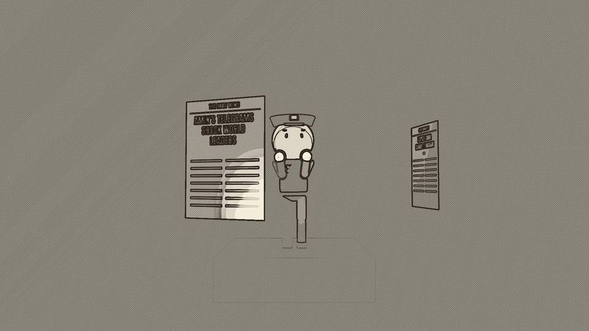<span class="sid">3.2</span><span class="dur">9.8s</span></div>
  <div class="notes">
    <p class="vo">“Amin was famous all over the world, and not for good reasons. He was loud, unpredictable, and he did not follow the rules.”</p>
    <dl><dt>Frame</dt><dd>Newspaper headlines about Amin spin around the portrait</dd><dt>Motion</dt><dd>orbit</dd><dt>Sound</dt><dd>paper whooshes</dd></dl>
    
  </div>
</article><article class="shot" id="s3-3">
  <div class="frame">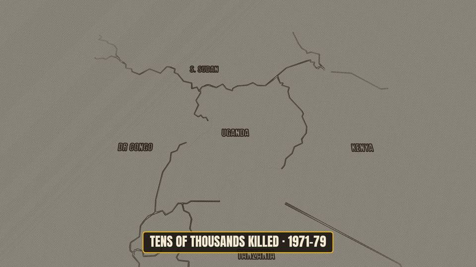<span class="sid">3.3</span><span class="dur">7.4s</span></div>
  <div class="notes">
    <p class="vo">“Since he took power in 1971, tens of thousands of Ugandans had been killed under his rule.”</p>
    <dl><dt>Frame</dt><dd>Dark map of Uganda, a slow counter &quot;TENS OF THOUSANDS&quot;; no bodies shown</dd><dt>Motion</dt><dd>slow sink and desaturate</dd><dt>Sound</dt><dd>low drone, single bell</dd></dl>
    
  </div>
</article><article class="shot" id="s3-4">
  <div class="frame">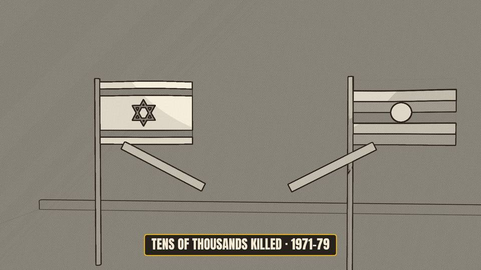<span class="sid">3.4</span><span class="dur">5.8s</span></div>
  <div class="notes">
    <p class="vo">“He had also broken off relations with Israel and turned openly against it.”</p>
    <dl><dt>Frame</dt><dd>Israeli and Ugandan flags; a torn ribbon between them</dd><dt>Motion</dt><dd>push in on the tear</dd><dt>Sound</dt><dd>paper tear</dd></dl>
    
  </div>
</article><article class="shot" id="s3-5">
  <div class="frame">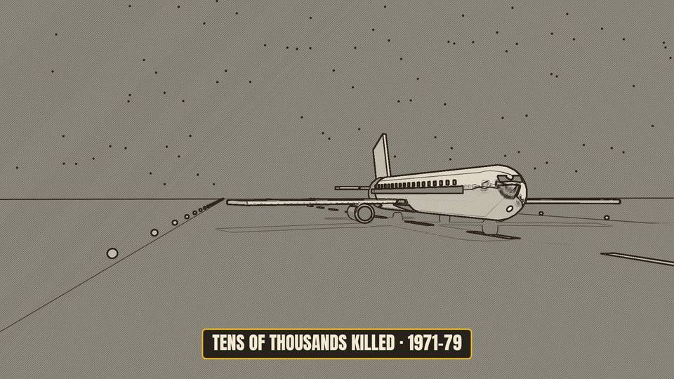<span class="sid">3.5</span><span class="dur">8.2s</span></div>
  <div class="notes">
    <p class="vo">“At about quarter past three in the morning on 28 June, Flight 139 lands at Entebbe, Uganda&#x27;s main airport.”</p>
    <dl><dt>Frame</dt><dd>Jet lands on a dark runway, landing lights on</dd><dt>Motion</dt><dd>low runway angle</dd><dt>Sound</dt><dd>tyre squeal, reverse thrust</dd></dl>
    <div class="tags"><span class="tag">ENTEBBE · 03:15</span></div>
  </div>
</article><article class="shot" id="s3-6">
  <div class="frame">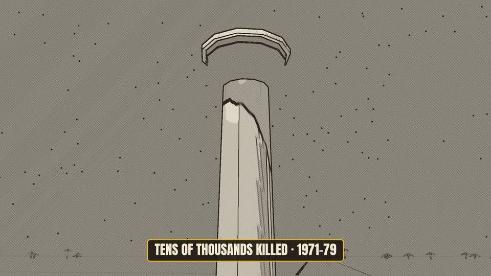<span class="sid">3.6</span><span class="dur">7.8s</span></div>
  <div class="notes">
    <p class="vo">“The control tower lets it land with no argument. Many later asked if Amin knew it was coming.”</p>
    <dl><dt>Frame</dt><dd>Tower with a lit window; chip &quot;never proven&quot;</dd><dt>Motion</dt><dd>slow push on the tower</dd><dt>Sound</dt><dd>radio crackle</dd></dl>
    <div class="tags"><span class="tag">chip: SUSPECTED, NEVER PROVEN</span></div>
  </div>
</article><article class="shot" id="s3-7">
  <div class="frame">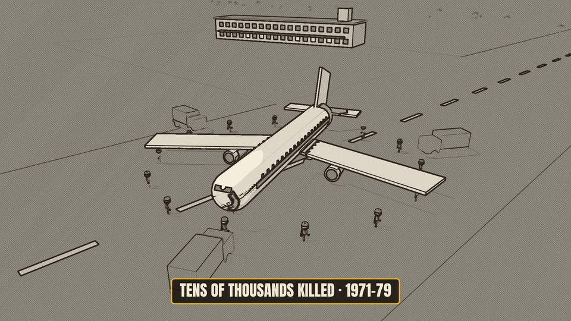<span class="sid">3.7</span><span class="dur">5.8s</span></div>
  <div class="notes">
    <p class="vo">“Ugandan soldiers surround the jet. Trucks, cars and armed men on every side.”</p>
    <dl><dt>Frame</dt><dd>Soldiers and trucks ring the plane in floodlight</dd><dt>Motion</dt><dd>crane up and around</dd><dt>Sound</dt><dd>truck engines, boots</dd></dl>
    
  </div>
</article><article class="shot" id="s3-8">
  <div class="frame">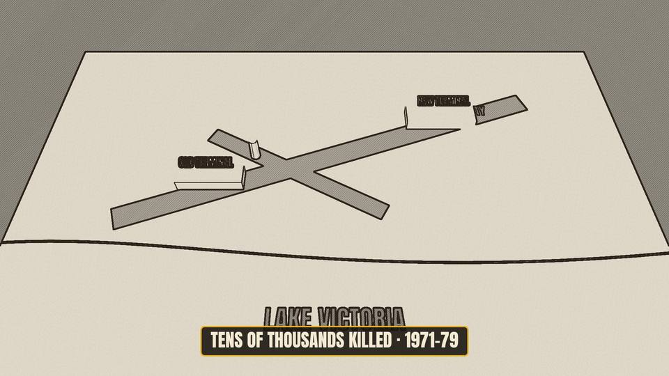<span class="sid">3.8</span><span class="dur">7.4s</span></div>
  <div class="notes">
    <p class="vo">“Entebbe has two terminals. A new one, and an old one that is hardly used any more.”</p>
    <dl><dt>Frame</dt><dd>Airport map: new terminal, old terminal, runways, Lake Victoria to the south</dd><dt>Motion</dt><dd>top-down push in, labels pop</dd><dt>Sound</dt><dd>label pops</dd></dl>
    
  </div>
</article><article class="shot" id="s3-9">
  <div class="frame">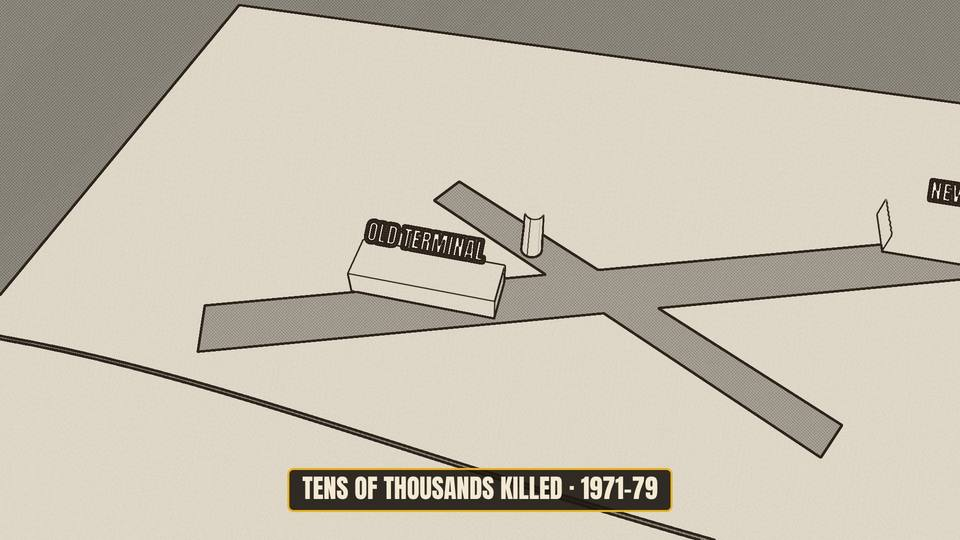<span class="sid">3.9</span><span class="dur">4.6s</span></div>
  <div class="notes">
    <p class="vo">“Remember the old terminal. Everything that happens next happens there.”</p>
    <dl><dt>Frame</dt><dd>Old terminal glows gold on the map</dd><dt>Motion</dt><dd>push in on the old terminal</dd><dt>Sound</dt><dd>soft ding, drone</dd></dl>
    
  </div>
</article><article class="shot" id="s3-10">
  <div class="frame">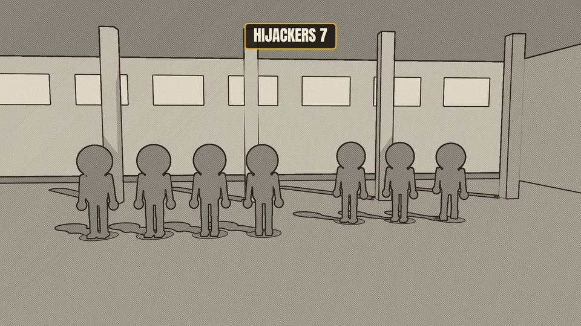<span class="sid">3.10</span><span class="dur">9.8s</span></div>
  <div class="notes">
    <p class="vo">“In the old terminal, the hijackers are joined by more men already waiting in Uganda. There are now at least seven of them.”</p>
    <dl><dt>Frame</dt><dd>Three new silhouettes step out from the shadows; counter 4 to 7</dd><dt>Motion</dt><dd>slow lateral dolly</dd><dt>Sound</dt><dd>footsteps, counter tick</dd></dl>
    <div class="tags"><span class="tag">tally: HIJACKERS 7</span></div>
  </div>
</article><article class="shot" id="s3-11">
  <div class="frame"><span class="sid">3.11</span><span class="dur">8.2s</span></div>
  <div class="notes">
    <p class="vo">“The passengers walk in a line from the plane to the old terminal, between Ugandan soldiers and the hijackers.”</p>
    <dl><dt>Frame</dt><dd>A long line of passengers walking across the apron at dawn, guards on both sides</dd><dt>Motion</dt><dd>tracking shot alongside the line</dd><dt>Sound</dt><dd>footsteps, distant birds</dd></dl>
    <div class="tags"><span class="tag">ENTEBBE · 06:00</span></div>
  </div>
</article><article class="shot" id="s3-12">
  <div class="frame"><span class="sid">3.12</span><span class="dur">7.4s</span></div>
  <div class="notes">
    <p class="vo">“They are put in the main hall. When the hijackers rest upstairs, Ugandan soldiers guard the hostages.”</p>
    <dl><dt>Frame</dt><dd>Hall with mattresses on the floor, soldiers at the doors</dd><dt>Motion</dt><dd>crane down into the hall</dd><dt>Sound</dt><dd>echoing murmur, fan hum</dd></dl>
    
  </div>
</article><article class="shot" id="s3-13">
  <div class="frame"><span class="sid">3.13</span><span class="dur">9.4s</span></div>
  <div class="notes">
    <p class="vo">“Then Idi Amin arrives in person and makes a speech. He says he is only a mediator, trying to keep them safe.”</p>
    <dl><dt>Frame</dt><dd>Amin at the front of the hall, hostages looking up; speech bubble &quot;I am here to help&quot;</dd><dt>Motion</dt><dd>slow push from the back of the hall</dd><dt>Sound</dt><dd>crowd hush, echo</dd></dl>
    
  </div>
</article><article class="shot" id="s3-14">
  <div class="frame"><span class="sid">3.14</span><span class="dur">6.2s</span></div>
  <div class="notes">
    <p class="vo">“The hijackers send their demands. Release fifty-three prisoners, forty of them held in Israel.”</p>
    <dl><dt>Frame</dt><dd>Demand card: &quot;53 PRISONERS · 40 IN ISRAEL&quot;</dd><dt>Motion</dt><dd>card slam</dd><dt>Sound</dt><dd>card slam, typewriter</dd></dl>
    
  </div>
</article><article class="shot" id="s3-15">
  <div class="frame"><span class="sid">3.15</span><span class="dur">9.0s</span></div>
  <div class="notes">
    <p class="vo">“And five million dollars for the plane. The deadline is 1 July. If it passes, they say, the hostages will die.”</p>
    <dl><dt>Frame</dt><dd>Demand card adds &quot;$5,000,000 · DEADLINE 1 JULY&quot;; clock icon</dd><dt>Motion</dt><dd>card slam, clock spins</dd><dt>Sound</dt><dd>cash register, clock tick</dd></dl>
    
  </div>
</article></div>
</section><section class="act" id="act4">
  <header class="acthead"><span class="actno">Act 4</span><h2>The Selection</h2><span class="period">29 JUNE TO 1 JULY 1976 · 1.1 min · 9 shots</span></header>
  <div class="grid"><article class="shot" id="s4-1">
  <div class="frame"><span class="sid">4.1</span><span class="dur">4.2s</span></div>
  <div class="notes">
    <p class="vo">“Meanwhile, the hijackers start reading names from the passports.”</p>
    <dl><dt>Frame</dt><dd>A hijacker at a table with a stack of passports, reading aloud</dd><dt>Motion</dt><dd>over-the-shoulder at the passports</dd><dt>Sound</dt><dd>paper rustle, echo</dd></dl>
    
  </div>
</article><article class="shot" id="s4-2">
  <div class="frame"><span class="sid">4.2</span><span class="dur">7.0s</span></div>
  <div class="notes">
    <p class="vo">“Israelis and Jewish passengers are moved to a separate room. Even Jewish passengers with other passports.”</p>
    <dl><dt>Frame</dt><dd>Passengers led through a doorway into a second room; the doorway between them</dd><dt>Motion</dt><dd>lateral dolly along the doorway</dd><dt>Sound</dt><dd>footsteps, door scrape</dd></dl>
    <div class="tags"><span class="tag">29 JUNE</span></div>
  </div>
</article><article class="shot" id="s4-3">
  <div class="frame"><span class="sid">4.3</span><span class="dur">7.0s</span></div>
  <div class="notes">
    <p class="vo">“For many of the older hostages, this moment brings back memories of Europe thirty years earlier.”</p>
    <dl><dt>Frame</dt><dd>An elderly man looks down at his sleeve; soft sepia vignette</dd><dt>Motion</dt><dd>slow push on his face</dd><dt>Sound</dt><dd>low cello-like pad</dd></dl>
    
  </div>
</article><article class="shot" id="s4-4">
  <div class="frame"><span class="sid">4.4</span><span class="dur">7.0s</span></div>
  <div class="notes">
    <p class="vo">“One hostage, seventy-five-year-old Dora Bloch, chokes on food and is taken to a hospital in Kampala.”</p>
    <dl><dt>Frame</dt><dd>An elderly woman helped into a Ugandan ambulance</dd><dt>Motion</dt><dd>slow push</dd><dt>Sound</dt><dd>ambulance door, engine</dd></dl>
    <div class="tags"><span class="tag">callout: DORA BLOCH / HOSTAGE, 75</span></div>
  </div>
</article><article class="shot" id="s4-5">
  <div class="frame"><span class="sid">4.5</span><span class="dur">5.8s</span></div>
  <div class="notes">
    <p class="vo">“Going to hospital will cost her everything. We will come back to her.”</p>
    <dl><dt>Frame</dt><dd>The ambulance drives off into the dark</dd><dt>Motion</dt><dd>camera holds as tail lights fade</dd><dt>Sound</dt><dd>engine fading, single bell</dd></dl>
    
  </div>
</article><article class="shot" id="s4-6">
  <div class="frame"><span class="sid">4.6</span><span class="dur">9.0s</span></div>
  <div class="notes">
    <p class="vo">“On 30 June and 1 July, the hijackers let more than a hundred non-Israeli hostages go. They are flown to Paris.”</p>
    <dl><dt>Frame</dt><dd>Groups of hostages walk to a waiting jet; counters show released numbers</dd><dt>Motion</dt><dd>crane up as they board</dd><dt>Sound</dt><dd>jet engine, crowd</dd></dl>
    <div class="tags"><span class="tag">tally: RELEASED 148</span></div>
  </div>
</article><article class="shot" id="s4-7">
  <div class="frame"><span class="sid">4.7</span><span class="dur">9.8s</span></div>
  <div class="notes">
    <p class="vo">“The hijackers also offer to free the Air France crew. Captain Bacos refuses. His passengers are still here, so his crew stays too.”</p>
    <dl><dt>Frame</dt><dd>Bacos stands in front of his twelve crew members, arms folded</dd><dt>Motion</dt><dd>slow push on Bacos</dd><dt>Sound</dt><dd>music swell, soft thud</dd></dl>
    
  </div>
</article><article class="shot" id="s4-8">
  <div class="frame"><span class="sid">4.8</span><span class="dur">5.8s</span></div>
  <div class="notes">
    <p class="vo">“A hundred and six hostages are left. Ninety-four passengers, and the twelve crew.”</p>
    <dl><dt>Frame</dt><dd>Hall with the remaining hostages; tally card changes</dd><dt>Motion</dt><dd>slow wide push</dd><dt>Sound</dt><dd>tally flip</dd></dl>
    <div class="tags"><span class="tag">tally: HOSTAGES 106</span></div>
  </div>
</article><article class="shot" id="s4-9">
  <div class="frame"><span class="sid">4.9</span><span class="dur">7.4s</span></div>
  <div class="notes">
    <p class="vo">“Releasing those people in Paris looked like mercy. It turned out to be the hijackers&#x27; biggest mistake.”</p>
    <dl><dt>Frame</dt><dd>The plane to Paris climbs away; a red X appears on the hijackers&#x27; card</dd><dt>Motion</dt><dd>tracking the plane</dd><dt>Sound</dt><dd>jet whoosh, error sting</dd></dl>
    
  </div>
</article></div>
</section><section class="act" id="act5">
  <header class="acthead"><span class="actno">Act 5</span><h2>The War Room</h2><span class="period">28 JUNE TO 1 JULY 1976 · 2.0 min · 15 shots</span></header>
  <div class="grid"><article class="shot" id="s5-1">
  <div class="frame"><span class="sid">5.1</span><span class="dur">3.8s</span></div>
  <div class="notes">
    <p class="vo">“Meanwhile in Israel, the government has not slept.”</p>
    <dl><dt>Frame</dt><dd>Night in Tel Aviv, a lit government building</dd><dt>Motion</dt><dd>crane down to a window</dd><dt>Sound</dt><dd>city hum, phone rings</dd></dl>
    
  </div>
</article><article class="shot" id="s5-2">
  <div class="frame"><span class="sid">5.2</span><span class="dur">8.6s</span></div>
  <div class="notes">
    <p class="vo">“The army, the Mossad and the Shin Bet meet day and night. Generals, pilots and intelligence officers fill the room.”</p>
    <dl><dt>Frame</dt><dd>War room, figures around a long table with maps and phones</dd><dt>Motion</dt><dd>lateral dolly down the table</dd><dt>Sound</dt><dd>phones ringing, murmur</dd></dl>
    
  </div>
</article><article class="shot" id="s5-3">
  <div class="frame"><span class="sid">5.3</span><span class="dur">9.4s</span></div>
  <div class="notes">
    <p class="vo">“One team has one job. Find out every detail about the place where the hostages are. Every door, every window, every guard.”</p>
    <dl><dt>Frame</dt><dd>An analyst pins photos and drawings to a wall board</dd><dt>Motion</dt><dd>push in on the board</dd><dt>Sound</dt><dd>pins tapping, paper</dd></dl>
    
  </div>
</article><article class="shot" id="s5-4">
  <div class="frame"><span class="sid">5.4</span><span class="dur">7.4s</span></div>
  <div class="notes">
    <p class="vo">“And then the hijackers&#x27; mistake pays off. Israeli agents fly to Paris and meet the released hostages.”</p>
    <dl><dt>Frame</dt><dd>Map: line from Tel Aviv to Paris</dd><dt>Motion</dt><dd>follow the line</dd><dt>Sound</dt><dd>map swipe</dd></dl>
    
  </div>
</article><article class="shot" id="s5-5">
  <div class="frame"><span class="sid">5.5</span><span class="dur">8.6s</span></div>
  <div class="notes">
    <p class="vo">“They ask them everything. How many hijackers? Where do the Ugandan soldiers stand? Who sleeps where? Which doors are open?”</p>
    <dl><dt>Frame</dt><dd>Interview room in Paris, a released hostage drawing a sketch of the hall</dd><dt>Motion</dt><dd>over-the-shoulder on the sketch</dd><dt>Sound</dt><dd>pencil scratch</dd></dl>
    
  </div>
</article><article class="shot" id="s5-6">
  <div class="frame"><span class="sid">5.6</span><span class="dur">10.2s</span></div>
  <div class="notes">
    <p class="vo">“At the same time, Israel tries to talk its way out. The United States asks Egypt&#x27;s president, Anwar Sadat, to put pressure on Amin.”</p>
    <dl><dt>Frame</dt><dd>Phones connect between Washington and Cairo</dd><dt>Motion</dt><dd>split screen phone call</dd><dt>Sound</dt><dd>phone dial, line hum</dd></dl>
    
  </div>
</article><article class="shot" id="s5-7">
  <div class="frame"><span class="sid">5.7</span><span class="dur">7.0s</span></div>
  <div class="notes">
    <p class="vo">“Even the PLO leader, Yasser Arafat, sends an envoy. The hijackers refuse to speak to him.”</p>
    <dl><dt>Frame</dt><dd>An envoy at the terminal door; the door stays shut</dd><dt>Motion</dt><dd>slow push on the shut door</dd><dt>Sound</dt><dd>door knock, silence</dd></dl>
    
  </div>
</article><article class="shot" id="s5-8">
  <div class="frame"><span class="sid">5.8</span><span class="dur">9.0s</span></div>
  <div class="notes">
    <p class="vo">“Israel finds a retired army colonel who knows Amin personally, Baruch Bar-Lev. He calls Amin on the phone again and again.”</p>
    <dl><dt>Frame</dt><dd>Bar-Lev at a desk with a rotary phone; name callout</dd><dt>Motion</dt><dd>push in on the phone</dd><dt>Sound</dt><dd>rotary dial, ring</dd></dl>
    <div class="tags"><span class="tag">callout: BARUCH BAR-LEV / RETIRED COLONEL, AMIN&#x27;S OLD FRIEND</span></div>
  </div>
</article><article class="shot" id="s5-9">
  <div class="frame"><span class="sid">5.9</span><span class="dur">10.6s</span></div>
  <div class="notes">
    <p class="vo">“He tells Amin this is his chance to be a hero. Free the hostages, he says, and you might even win the Nobel Peace Prize.”</p>
    <dl><dt>Frame</dt><dd>A golden medal spins in a thought bubble over the phone</dd><dt>Motion</dt><dd>medal spins, slow push</dd><dt>Sound</dt><dd>chime, phone line</dd></dl>
    <div class="tags"><span class="tag">chip: BAR-LEV&#x27;S ACCOUNT</span></div>
  </div>
</article><article class="shot" id="s5-10">
  <div class="frame"><span class="sid">5.10</span><span class="dur">8.2s</span></div>
  <div class="notes">
    <p class="vo">“Amin says it is out of his hands. Give them what they want, or they really will kill everyone.”</p>
    <dl><dt>Frame</dt><dd>Amin on the other end of the line, shrugging</dd><dt>Motion</dt><dd>over-the-shoulder on Amin</dd><dt>Sound</dt><dd>line crackle, low boom</dd></dl>
    
  </div>
</article><article class="shot" id="s5-11">
  <div class="frame"><span class="sid">5.11</span><span class="dur">8.6s</span></div>
  <div class="notes">
    <p class="vo">“At home, the pressure grows by the hour. The hostages&#x27; families protest outside government offices and push their way inside.”</p>
    <dl><dt>Frame</dt><dd>Crowd with placards outside a government building; some push through the doors</dd><dt>Motion</dt><dd>wide crane over the crowd</dd><dt>Sound</dt><dd>crowd shouts, doors</dd></dl>
    
  </div>
</article><article class="shot" id="s5-12">
  <div class="frame"><span class="sid">5.12</span><span class="dur">5.8s</span></div>
  <div class="notes">
    <p class="vo">“They are on the news every night. Bring them home, whatever it costs.”</p>
    <dl><dt>Frame</dt><dd>TV set showing family members; placard &quot;BRING THEM HOME&quot;</dd><dt>Motion</dt><dd>push in on the TV</dd><dt>Sound</dt><dd>TV static, voice murmur</dd></dl>
    
  </div>
</article><article class="shot" id="s5-13">
  <div class="frame"><span class="sid">5.13</span><span class="dur">10.2s</span></div>
  <div class="notes">
    <p class="vo">“Prime Minister Yitzhak Rabin is ready to negotiate. The hostages are in an enemy country, and he will not risk their lives over prisoners.”</p>
    <dl><dt>Frame</dt><dd>Rabin at the head of the table; name callout</dd><dt>Motion</dt><dd>slow push on Rabin</dd><dt>Sound</dt><dd>clock tick</dd></dl>
    <div class="tags"><span class="tag">callout: YITZHAK RABIN / PRIME MINISTER</span></div>
  </div>
</article><article class="shot" id="s5-14">
  <div class="frame"><span class="sid">5.14</span><span class="dur">7.8s</span></div>
  <div class="notes">
    <p class="vo">“His defence minister, Shimon Peres, disagrees. Free terrorists today, he says, and there will be more hijackings tomorrow.”</p>
    <dl><dt>Frame</dt><dd>Peres stands across the table; name callout</dd><dt>Motion</dt><dd>reverse angle, push</dd><dt>Sound</dt><dd>chair scrape, table thud</dd></dl>
    <div class="tags"><span class="tag">callout: SHIMON PERES / DEFENCE MINISTER</span></div>
  </div>
</article><article class="shot" id="s5-15">
  <div class="frame"><span class="sid">5.15</span><span class="dur">6.6s</span></div>
  <div class="notes">
    <p class="vo">“They agree on one thing. Bring us a military plan, and then we will decide.”</p>
    <dl><dt>Frame</dt><dd>Both men look at an empty map on the table</dd><dt>Motion</dt><dd>crane over the table</dd><dt>Sound</dt><dd>single piano note</dd></dl>
    
  </div>
</article></div>
</section><section class="act" id="act6">
  <header class="acthead"><span class="actno">Act 6</span><h2>Three Bad Plans</h2><span class="period">1 TO 3 JULY 1976 · 2.2 min · 17 shots</span></header>
  <div class="grid"><article class="shot" id="s6-1">
  <div class="frame"><span class="sid">6.1</span><span class="dur">6.6s</span></div>
  <div class="notes">
    <p class="vo">“On the morning of 1 July, the generals meet at army headquarters in Tel Aviv.”</p>
    <dl><dt>Frame</dt><dd>Kirya headquarters at dawn, cars arriving</dd><dt>Motion</dt><dd>crane down</dd><dt>Sound</dt><dd>car doors, birds</dd></dl>
    <div class="tags"><span class="tag">TEL AVIV · 1 JULY</span></div>
  </div>
</article><article class="shot" id="s6-2">
  <div class="frame"><span class="sid">6.2</span><span class="dur">3.4s</span></div>
  <div class="notes">
    <p class="vo">“Brigadier General Dan Shomron brings three plans.”</p>
    <dl><dt>Frame</dt><dd>Shomron at an easel with three covered boards; name callout</dd><dt>Motion</dt><dd>push in</dd><dt>Sound</dt><dd>paper flip</dd></dl>
    <div class="tags"><span class="tag">callout: DAN SHOMRON / BRIGADIER GENERAL</span></div>
  </div>
</article><article class="shot" id="s6-3">
  <div class="frame"><span class="sid">6.3</span><span class="dur">7.0s</span></div>
  <div class="notes">
    <p class="vo">“Plan one. Navy commandos cross Lake Victoria by boat and storm the terminal from the water.”</p>
    <dl><dt>Frame</dt><dd>Map of Lake Victoria; boat icons cross toward Entebbe</dd><dt>Motion</dt><dd>follow the boats</dd><dt>Sound</dt><dd>water lapping, boat engine</dd></dl>
    
  </div>
</article><article class="shot" id="s6-4">
  <div class="frame"><span class="sid">6.4</span><span class="dur">5.4s</span></div>
  <div class="notes">
    <p class="vo">“One problem nobody had written down. Lake Victoria is full of crocodiles.”</p>
    <dl><dt>Frame</dt><dd>Crocodile eyes rise out of the water next to the boat icons; red X stamps the plan</dd><dt>Motion</dt><dd>push in on the crocodile</dd><dt>Sound</dt><dd>crocodile splash, X stamp</dd></dl>
    
  </div>
</article><article class="shot" id="s6-5">
  <div class="frame"><span class="sid">6.5</span><span class="dur">4.2s</span></div>
  <div class="notes">
    <p class="vo">“Plan two. Drop paratroopers onto the airport at night.”</p>
    <dl><dt>Frame</dt><dd>Parachute icons drift down over the map</dd><dt>Motion</dt><dd>crane following the parachutes</dd><dt>Sound</dt><dd>wind, cloth flutter</dd></dl>
    
  </div>
</article><article class="shot" id="s6-6">
  <div class="frame"><span class="sid">6.6</span><span class="dur">7.8s</span></div>
  <div class="notes">
    <p class="vo">“Plan three. Hide commandos inside a normal passenger plane and land at Entebbe as if nothing was wrong.”</p>
    <dl><dt>Frame</dt><dd>Cutaway civilian jet full of commandos instead of passengers</dd><dt>Motion</dt><dd>slow orbit</dd><dt>Sound</dt><dd>jet hum</dd></dl>
    
  </div>
</article><article class="shot" id="s6-7">
  <div class="frame"><span class="sid">6.7</span><span class="dur">9.8s</span></div>
  <div class="notes">
    <p class="vo">“All three plans get them in. None of them get them out. Every exit depends on Idi Amin helping, and nobody trusts Amin.”</p>
    <dl><dt>Frame</dt><dd>Three boards, each stamped with a red X</dd><dt>Motion</dt><dd>lateral dolly across the boards</dd><dt>Sound</dt><dd>three X stamps</dd></dl>
    
  </div>
</article><article class="shot" id="s6-8">
  <div class="frame"><span class="sid">6.8</span><span class="dur">6.2s</span></div>
  <div class="notes">
    <p class="vo">“Shomron asks for more time to build a plan that needs nothing from Uganda.”</p>
    <dl><dt>Frame</dt><dd>Shomron alone at the table, maps spread out</dd><dt>Motion</dt><dd>slow push</dd><dt>Sound</dt><dd>clock tick</dd></dl>
    
  </div>
</article><article class="shot" id="s6-9">
  <div class="frame"><span class="sid">6.9</span><span class="dur">10.2s</span></div>
  <div class="notes">
    <p class="vo">“So Israel buys that time. It tells the hijackers it accepts their demands, but needs a few days to gather prisoners from five countries.”</p>
    <dl><dt>Frame</dt><dd>Telegram slides across a table: &quot;WE ACCEPT. NEED MORE TIME.&quot;</dd><dt>Motion</dt><dd>push in on the telegram</dd><dt>Sound</dt><dd>telegraph clicks</dd></dl>
    
  </div>
</article><article class="shot" id="s6-10">
  <div class="frame"><span class="sid">6.10</span><span class="dur">11.4s</span></div>
  <div class="notes">
    <p class="vo">“Amin likes this. He is about to fly to Mauritius to hand over the chair of the Organisation of African Unity, and a delay suits him too.”</p>
    <dl><dt>Frame</dt><dd>Amin boarding a plane, briefcase in hand</dd><dt>Motion</dt><dd>tracking shot</dd><dt>Sound</dt><dd>jet whoosh</dd></dl>
    
  </div>
</article><article class="shot" id="s6-11">
  <div class="frame"><span class="sid">6.11</span><span class="dur">6.6s</span></div>
  <div class="notes">
    <p class="vo">“The deadline moves to 4 July. Amin goes on the radio and takes the credit.”</p>
    <dl><dt>Frame</dt><dd>Deadline card flips from 1 JULY to 4 JULY; Amin at a microphone</dd><dt>Motion</dt><dd>card flip, push on Amin</dd><dt>Sound</dt><dd>card flip, radio crackle</dd></dl>
    
  </div>
</article><article class="shot" id="s6-12">
  <div class="frame"><span class="sid">6.12</span><span class="dur">9.4s</span></div>
  <div class="notes">
    <p class="vo">“Then the intelligence team finds a gift. An Israeli company, Solel Boneh, built the old terminal at Entebbe in the nineteen seventies.”</p>
    <dl><dt>Frame</dt><dd>Blueprint unrolls on the table, &quot;SOLEL BONEH&quot; in the corner</dd><dt>Motion</dt><dd>push in on the blueprint</dd><dt>Sound</dt><dd>paper unroll</dd></dl>
    
  </div>
</article><article class="shot" id="s6-13">
  <div class="frame"><span class="sid">6.13</span><span class="dur">5.4s</span></div>
  <div class="notes">
    <p class="vo">“Its engineers still have the plans. Every room, every corridor, every door.”</p>
    <dl><dt>Frame</dt><dd>Blueprint lines glow and extrude into a 3D terminal model</dd><dt>Motion</dt><dd>orbit the model as it rises</dd><dt>Sound</dt><dd>build whoosh, soft dings</dd></dl>
    
  </div>
</article><article class="shot" id="s6-14">
  <div class="frame"><span class="sid">6.14</span><span class="dur">9.4s</span></div>
  <div class="notes">
    <p class="vo">“With the blueprints and the Paris interviews, the soldiers build a copy of the terminal and practise the raid again and again.”</p>
    <dl><dt>Frame</dt><dd>Night training: soldiers run through a wood and canvas mock-up</dd><dt>Motion</dt><dd>tracking alongside runners</dd><dt>Sound</dt><dd>boots, whistle</dd></dl>
    
  </div>
</article><article class="shot" id="s6-15">
  <div class="frame"><span class="sid">6.15</span><span class="dur">11.8s</span></div>
  <div class="notes">
    <p class="vo">“The final plan is bold. More than a hundred commandos fly to Uganda without asking anyone. They take the whole airport, free the hostages, and fly them home.”</p>
    <dl><dt>Frame</dt><dd>Animated plan on the map: planes land, teams fan out, planes leave</dd><dt>Motion</dt><dd>top-down plan animation</dd><dt>Sound</dt><dd>whooshes per arrow</dd></dl>
    
  </div>
</article><article class="shot" id="s6-16">
  <div class="frame"><span class="sid">6.16</span><span class="dur">9.0s</span></div>
  <div class="notes">
    <p class="vo">“The plan only works if everything happens fast. Faster than Uganda&#x27;s army can react. That is why they call it Thunderbolt.”</p>
    <dl><dt>Frame</dt><dd>Lightning bolt emblem flashes across the map</dd><dt>Motion</dt><dd>title flash</dd><dt>Sound</dt><dd>thunder crack</dd></dl>
    
  </div>
</article><article class="shot" id="s6-17">
  <div class="frame"><span class="sid">6.17</span><span class="dur">7.0s</span></div>
  <div class="notes">
    <p class="vo">“On 3 July, the cabinet approves it. By then, the planes are already in the air.”</p>
    <dl><dt>Frame</dt><dd>Clock on the wall; through the window, planes climbing</dd><dt>Motion</dt><dd>push in on the clock</dd><dt>Sound</dt><dd>clock tick, distant engines</dd></dl>
    <div class="tags"><span class="tag">3 JULY 1976</span></div>
  </div>
</article></div>
</section><section class="act" id="act7">
  <header class="acthead"><span class="actno">Act 7</span><h2>Four Hercules</h2><span class="period">3 JULY 1976 · 2.0 min · 17 shots</span></header>
  <div class="grid"><article class="shot" id="s7-1">
  <div class="frame"><span class="sid">7.1</span><span class="dur">8.2s</span></div>
  <div class="notes">
    <p class="vo">“Meanwhile, at Entebbe, the hijackers are relaxed. In less than a day, they think, they will have their prisoners.”</p>
    <dl><dt>Frame</dt><dd>Hijackers playing cards upstairs in the terminal</dd><dt>Motion</dt><dd>slow push</dd><dt>Sound</dt><dd>cards shuffling, fan hum</dd></dl>
    
  </div>
</article><article class="shot" id="s7-2">
  <div class="frame"><span class="sid">7.2</span><span class="dur">4.6s</span></div>
  <div class="notes">
    <p class="vo">“Israel picks four C-130 Hercules transport planes for the job.”</p>
    <dl><dt>Frame</dt><dd>Four C-130s lined up on an Israeli airbase at sunset</dd><dt>Motion</dt><dd>lateral dolly along the noses</dd><dt>Sound</dt><dd>engine start whine</dd></dl>
    
  </div>
</article><article class="shot" id="s7-3">
  <div class="frame"><span class="sid">7.3</span><span class="dur">5.8s</span></div>
  <div class="notes">
    <p class="vo">“The Hercules can land on short, rough runways and take off again fast.”</p>
    <dl><dt>Frame</dt><dd>A C-130 does a short landing on a dirt strip, dust cloud</dd><dt>Motion</dt><dd>tracking the landing</dd><dt>Sound</dt><dd>dust whoosh, tyre thud</dd></dl>
    
  </div>
</article><article class="shot" id="s7-4">
  <div class="frame"><span class="sid">7.4</span><span class="dur">7.4s</span></div>
  <div class="notes">
    <p class="vo">“It carries heavy loads, and its back ramp opens so cars and soldiers can roll straight out.”</p>
    <dl><dt>Frame</dt><dd>Cutaway C-130 showing a Mercedes, Land Rovers and soldiers inside</dd><dt>Motion</dt><dd>orbit the cutaway</dd><dt>Sound</dt><dd>hydraulic whine</dd></dl>
    
  </div>
</article><article class="shot" id="s7-5">
  <div class="frame"><span class="sid">7.5</span><span class="dur">9.0s</span></div>
  <div class="notes">
    <p class="vo">“Israel to Entebbe is more than four thousand kilometres. Even full of fuel, the planes cannot make it home without refuelling.”</p>
    <dl><dt>Frame</dt><dd>Map: route with a fuel gauge running down to empty before Israel</dd><dt>Motion</dt><dd>follow the route</dd><dt>Sound</dt><dd>fuel beep</dd></dl>
    
  </div>
</article><article class="shot" id="s7-6">
  <div class="frame"><span class="sid">7.6</span><span class="dur">6.2s</span></div>
  <div class="notes">
    <p class="vo">“So Israel secretly arranges to refuel in Kenya, at Nairobi, on the way back.”</p>
    <dl><dt>Frame</dt><dd>Map: Nairobi glows; secret handshake icon</dd><dt>Motion</dt><dd>push in on Nairobi</dd><dt>Sound</dt><dd>soft ding</dd></dl>
    
  </div>
</article><article class="shot" id="s7-7">
  <div class="frame"><span class="sid">7.7</span><span class="dur">8.2s</span></div>
  <div class="notes">
    <p class="vo">“They also bring a team with portable pumps, ready to steal fuel from Entebbe itself if Kenya says no.”</p>
    <dl><dt>Frame</dt><dd>Ten soldiers with fuel pumps and hoses</dd><dt>Motion</dt><dd>slow push</dd><dt>Sound</dt><dd>metal clanks</dd></dl>
    
  </div>
</article><article class="shot" id="s7-8">
  <div class="frame"><span class="sid">7.8</span><span class="dur">8.6s</span></div>
  <div class="notes">
    <p class="vo">“In the afternoon of 3 July, the four planes take off from Sharm el-Sheikh, at the tip of the Sinai.”</p>
    <dl><dt>Frame</dt><dd>Planes take off one by one over the sea</dd><dt>Motion</dt><dd>low angle takeoffs</dd><dt>Sound</dt><dd>four jet roars</dd></dl>
    <div class="tags"><span class="tag">SHARM EL-SHEIKH</span></div>
  </div>
</article><article class="shot" id="s7-9">
  <div class="frame"><span class="sid">7.9</span><span class="dur">10.2s</span></div>
  <div class="notes">
    <p class="vo">“Two Boeing 707s follow. One is a flying hospital that waits in Nairobi. The other is a flying command post that circles over Entebbe.”</p>
    <dl><dt>Frame</dt><dd>Two 707s high above the C-130s; labels &quot;HOSPITAL&quot; and &quot;COMMAND&quot;</dd><dt>Motion</dt><dd>crane up through the clouds</dd><dt>Sound</dt><dd>jet whooshes, label pops</dd></dl>
    
  </div>
</article><article class="shot" id="s7-10">
  <div class="frame"><span class="sid">7.10</span><span class="dur">11.4s</span></div>
  <div class="notes">
    <p class="vo">“They fly down the Red Sea along the airline routes, then drop very low, just above the waves, below the radars of Egypt, Sudan and Saudi Arabia.”</p>
    <dl><dt>Frame</dt><dd>Map: route ribbon dips; radar circles sweep and miss the planes</dd><dt>Motion</dt><dd>follow ribbon, radar sweeps</dd><dt>Sound</dt><dd>radar pings</dd></dl>
    
  </div>
</article><article class="shot" id="s7-11">
  <div class="frame"><span class="sid">7.11</span><span class="dur">4.6s</span></div>
  <div class="notes">
    <p class="vo">“Over Ethiopia, over Kenya, then across Lake Victoria toward Entebbe.”</p>
    <dl><dt>Frame</dt><dd>Map: ribbon crosses Ethiopia and Kenya to the lake</dd><dt>Motion</dt><dd>crane down to the lake</dd><dt>Sound</dt><dd>wind, drone</dd></dl>
    
  </div>
</article><article class="shot" id="s7-12">
  <div class="frame"><span class="sid">7.12</span><span class="dur">3.0s</span></div>
  <div class="notes">
    <p class="vo">“Each plane has its own job.”</p>
    <dl><dt>Frame</dt><dd>Four plane icons with numbers 1 to 4</dd><dt>Motion</dt><dd>card flips</dd><dt>Sound</dt><dd>card flips</dd></dl>
    
  </div>
</article><article class="shot" id="s7-13">
  <div class="frame"><span class="sid">7.13</span><span class="dur">7.8s</span></div>
  <div class="notes">
    <p class="vo">“Plane one carries the assault team. Twenty-nine commandos from Israel&#x27;s elite unit, Sayeret Matkal, led by Yoni Netanyahu.”</p>
    <dl><dt>Frame</dt><dd>Cutaway of plane one, the convoy and the 29 men</dd><dt>Motion</dt><dd>push in</dd><dt>Sound</dt><dd>music swell</dd></dl>
    
  </div>
</article><article class="shot" id="s7-14">
  <div class="frame"><span class="sid">7.14</span><span class="dur">7.8s</span></div>
  <div class="notes">
    <p class="vo">“Yoni is the older brother of a man who will one day become Israel&#x27;s prime minister, Benjamin Netanyahu.”</p>
    <dl><dt>Frame</dt><dd>Two brothers in a family photo frame</dd><dt>Motion</dt><dd>slow push on the frame</dd><dt>Sound</dt><dd>soft pad</dd></dl>
    
  </div>
</article><article class="shot" id="s7-15">
  <div class="frame"><span class="sid">7.15</span><span class="dur">7.0s</span></div>
  <div class="notes">
    <p class="vo">“Plane two carries a team to take the new terminal and hold off the Ugandan army.”</p>
    <dl><dt>Frame</dt><dd>Plane two cutaway, soldiers with flags pointing to the new terminal</dd><dt>Motion</dt><dd>lateral dolly</dd><dt>Sound</dt><dd>drum hit</dd></dl>
    
  </div>
</article><article class="shot" id="s7-16">
  <div class="frame"><span class="sid">7.16</span><span class="dur">7.4s</span></div>
  <div class="notes">
    <p class="vo">“Plane three carries the team that will destroy Uganda&#x27;s fighter jets, so nobody can chase them home.”</p>
    <dl><dt>Frame</dt><dd>Plane three cutaway, map arrow to the MiG line</dd><dt>Motion</dt><dd>push in</dd><dt>Sound</dt><dd>drum hit</dd></dl>
    
  </div>
</article><article class="shot" id="s7-17">
  <div class="frame"><span class="sid">7.17</span><span class="dur">4.6s</span></div>
  <div class="notes">
    <p class="vo">“Plane four is for the hostages, with doctors on board.”</p>
    <dl><dt>Frame</dt><dd>Plane four with stretchers and a medic</dd><dt>Motion</dt><dd>slow orbit</dd><dt>Sound</dt><dd>soft ding</dd></dl>
    
  </div>
</article></div>
</section><section class="act" id="act8">
  <header class="acthead"><span class="actno">Act 8</span><h2>The Fake Mercedes</h2><span class="period">3 TO 4 JULY 1976 · 2.7 min · 23 shots</span></header>
  <div class="grid"><article class="shot" id="s8-1">
  <div class="frame"><span class="sid">8.1</span><span class="dur">5.0s</span></div>
  <div class="notes">
    <p class="vo">“One minute before eleven at night, the first Hercules reaches Entebbe.”</p>
    <dl><dt>Frame</dt><dd>Airport map with the lead plane icon approaching from the lake</dd><dt>Motion</dt><dd>top-down push</dd><dt>Sound</dt><dd>engine drone</dd></dl>
    <div class="tags"><span class="tag">ENTEBBE · 22:59</span></div>
  </div>
</article><article class="shot" id="s8-2">
  <div class="frame"><span class="sid">8.2</span><span class="dur">6.6s</span></div>
  <div class="notes">
    <p class="vo">“It comes in with its lights off, two engines shut down to keep it quiet.”</p>
    <dl><dt>Frame</dt><dd>Dark C-130 over the lake, two propellers still</dd><dt>Motion</dt><dd>tracking the plane</dd><dt>Sound</dt><dd>propeller whoosh, wind</dd></dl>
    
  </div>
</article><article class="shot" id="s8-3">
  <div class="frame"><span class="sid">8.3</span><span class="dur">6.2s</span></div>
  <div class="notes">
    <p class="vo">“The ramp opens in the air, so not one second is lost after landing.”</p>
    <dl><dt>Frame</dt><dd>Ramp lowering in flight, soldiers holding on inside</dd><dt>Motion</dt><dd>interior shot looking out the open ramp</dd><dt>Sound</dt><dd>wind roar</dd></dl>
    
  </div>
</article><article class="shot" id="s8-4">
  <div class="frame"><span class="sid">8.4</span><span class="dur">10.2s</span></div>
  <div class="notes">
    <p class="vo">“On the ground, soldiers place battery lights along the runway, so the next planes can land even if Uganda turns the runway lights off.”</p>
    <dl><dt>Frame</dt><dd>Soldiers place small lamps along the runway edge</dd><dt>Motion</dt><dd>lateral dolly along the lamps</dd><dt>Sound</dt><dd>lamp clicks</dd></dl>
    
  </div>
</article><article class="shot" id="s8-5">
  <div class="frame"><span class="sid">8.5</span><span class="dur">4.6s</span></div>
  <div class="notes">
    <p class="vo">“Out comes the black Mercedes and the two Land Rovers.”</p>
    <dl><dt>Frame</dt><dd>Ramp down, convoy rolls out</dd><dt>Motion</dt><dd>low angle</dd><dt>Sound</dt><dd>engine rev, ramp clank</dd></dl>
    <div class="tags"><span class="tag">23:01</span></div>
  </div>
</article><article class="shot" id="s8-6">
  <div class="frame"><span class="sid">8.6</span><span class="dur">11.4s</span></div>
  <div class="notes">
    <p class="vo">“Amin always arrived at the airport in a black Mercedes with an escort. So the Israelis copied it. Same car, same flags, same kind of number plates.”</p>
    <dl><dt>Frame</dt><dd>Close detail on the flag and plate; side by side with a photo of the real convoy</dd><dt>Motion</dt><dd>push in on the flag</dd><dt>Sound</dt><dd>cloth flutter</dd></dl>
    
  </div>
</article><article class="shot" id="s8-7">
  <div class="frame"><span class="sid">8.7</span><span class="dur">6.6s</span></div>
  <div class="notes">
    <p class="vo">“Then they drive slowly toward the old terminal, at the speed Amin&#x27;s convoy usually drove.”</p>
    <dl><dt>Frame</dt><dd>Convoy driving through the dark, speedometer 40 km/h</dd><dt>Motion</dt><dd>tracking alongside the convoy</dd><dt>Sound</dt><dd>engine purr</dd></dl>
    
  </div>
</article><article class="shot" id="s8-8">
  <div class="frame"><span class="sid">8.8</span><span class="dur">8.6s</span></div>
  <div class="notes">
    <p class="vo">“But they did not know one thing. A few days earlier, Amin had bought a new Mercedes. A white one.”</p>
    <dl><dt>Frame</dt><dd>Split frame: black Mercedes and white Mercedes; red X on the black one</dd><dt>Motion</dt><dd>push in on the white car</dd><dt>Sound</dt><dd>error sting</dd></dl>
    
  </div>
</article><article class="shot" id="s8-9">
  <div class="frame"><span class="sid">8.9</span><span class="dur">9.4s</span></div>
  <div class="notes">
    <p class="vo">“Three hundred metres from the terminal, two Ugandan sentries see a black Mercedes and know something is wrong. They raise their rifles.”</p>
    <dl><dt>Frame</dt><dd>Two sentries step into the headlights, rifles raised</dd><dt>Motion</dt><dd>slow push from behind the convoy</dd><dt>Sound</dt><dd>music drop, boots</dd></dl>
    
  </div>
</article><article class="shot" id="s8-10">
  <div class="frame"><span class="sid">8.10</span><span class="dur">11.0s</span></div>
  <div class="notes">
    <p class="vo">“The commandos had orders not to fire on Ugandans. But the moment has come. A silenced shot, then a loud one from the Land Rover behind.”</p>
    <dl><dt>Frame</dt><dd>Cut to black on the first shot; a flash lights the dark</dd><dt>Motion</dt><dd>cut to black, flash</dd><dt>Sound</dt><dd>silenced pop, loud crack</dd></dl>
    
  </div>
</article><article class="shot" id="s8-11">
  <div class="frame"><span class="sid">8.11</span><span class="dur">5.0s</span></div>
  <div class="notes">
    <p class="vo">“The loud shot echoes across the runway. The surprise is gone.”</p>
    <dl><dt>Frame</dt><dd>Wide shot of the airport, lights flicking on in windows</dd><dt>Motion</dt><dd>slow crane up</dd><dt>Sound</dt><dd>echo, dogs barking</dd></dl>
    
  </div>
</article><article class="shot" id="s8-12">
  <div class="frame"><span class="sid">8.12</span><span class="dur">5.0s</span></div>
  <div class="notes">
    <p class="vo">“They leave the cars and run the last three hundred metres.”</p>
    <dl><dt>Frame</dt><dd>Silhouettes running toward the terminal</dd><dt>Motion</dt><dd>tracking at running speed</dd><dt>Sound</dt><dd>running boots, breath</dd></dl>
    
  </div>
</article><article class="shot" id="s8-13">
  <div class="frame"><span class="sid">8.13</span><span class="dur">7.4s</span></div>
  <div class="notes">
    <p class="vo">“Soldiers on top of the old control tower open fire. Two teams stay back to fight them.”</p>
    <dl><dt>Frame</dt><dd>Muzzle flashes high on the tower as small star flashes; nobody shown hit</dd><dt>Motion</dt><dd>push in on the tower</dd><dt>Sound</dt><dd>gunfire rattle, distant</dd></dl>
    
  </div>
</article><article class="shot" id="s8-14">
  <div class="frame"><span class="sid">8.14</span><span class="dur">5.0s</span></div>
  <div class="notes">
    <p class="vo">“Yoni&#x27;s team keeps running toward the main hall. Speed is everything.”</p>
    <dl><dt>Frame</dt><dd>Yoni at the front of the team, silhouette</dd><dt>Motion</dt><dd>tracking close behind</dd><dt>Sound</dt><dd>heartbeat, boots</dd></dl>
    
  </div>
</article><article class="shot" id="s8-15">
  <div class="frame"><span class="sid">8.15</span><span class="dur">7.8s</span></div>
  <div class="notes">
    <p class="vo">“Outside the terminal, Yoni is hit by fire from the Ugandan soldiers. He falls. The others keep going.”</p>
    <dl><dt>Frame</dt><dd>Yoni&#x27;s silhouette stops; cut to black for one beat</dd><dt>Motion</dt><dd>cut to black</dd><dt>Sound</dt><dd>single shot, silence</dd></dl>
    
  </div>
</article><article class="shot" id="s8-16">
  <div class="frame"><span class="sid">8.16</span><span class="dur">7.0s</span></div>
  <div class="notes">
    <p class="vo">“The man who led the raid is the first to fall. The raid has barely begun.”</p>
    <dl><dt>Frame</dt><dd>The empty spot in the running line, lit by a single lamp</dd><dt>Motion</dt><dd>slow push</dd><dt>Sound</dt><dd>low drone</dd></dl>
    
  </div>
</article><article class="shot" id="s8-17">
  <div class="frame"><span class="sid">8.17</span><span class="dur">10.6s</span></div>
  <div class="notes">
    <p class="vo">“At the door, a hijacker steps out, and he is shot. Inside, two more hijackers turn toward the hostages, and the commandos shoot them first.”</p>
    <dl><dt>Frame</dt><dd>Hall doorway lit by flashes, silhouettes only</dd><dt>Motion</dt><dd>cut between flashes</dd><dt>Sound</dt><dd>gunshots, glass</dd></dl>
    
  </div>
</article><article class="shot" id="s8-18">
  <div class="frame"><span class="sid">8.18</span><span class="dur">6.2s</span></div>
  <div class="notes">
    <p class="vo">“The commandos shout through a megaphone in Hebrew and English. Stay down. Stay down.”</p>
    <dl><dt>Frame</dt><dd>A commando with a megaphone; hostages flat on the mattresses</dd><dt>Motion</dt><dd>low angle from the floor</dd><dt>Sound</dt><dd>megaphone shout, echo</dd></dl>
    
  </div>
</article><article class="shot" id="s8-19">
  <div class="frame"><span class="sid">8.19</span><span class="dur">7.8s</span></div>
  <div class="notes">
    <p class="vo">“One young hostage stands up. In the dark, a commando takes him for a hijacker. He is killed.”</p>
    <dl><dt>Frame</dt><dd>A standing silhouette among the lying hostages; cut to black</dd><dt>Motion</dt><dd>cut to black</dd><dt>Sound</dt><dd>single shot, silence</dd></dl>
    
  </div>
</article><article class="shot" id="s8-20">
  <div class="frame"><span class="sid">8.20</span><span class="dur">3.0s</span></div>
  <div class="notes">
    <p class="vo">“Three hostages die in the crossfire.”</p>
    <dl><dt>Frame</dt><dd>Three candles on black</dd><dt>Motion</dt><dd>slow push</dd><dt>Sound</dt><dd>single bell</dd></dl>
    <div class="tags"><span class="tag">tally: HOSTAGES KILLED 3</span></div>
  </div>
</article><article class="shot" id="s8-21">
  <div class="frame"><span class="sid">8.21</span><span class="dur">7.4s</span></div>
  <div class="notes">
    <p class="vo">“The hostages point to a side room. The last hijackers are hiding there. The commandos go in.”</p>
    <dl><dt>Frame</dt><dd>Door to the side room, a flash under the door</dd><dt>Motion</dt><dd>push in on the door</dd><dt>Sound</dt><dd>grenade thump, gunfire</dd></dl>
    
  </div>
</article><article class="shot" id="s8-22">
  <div class="frame"><span class="sid">8.22</span><span class="dur">6.2s</span></div>
  <div class="notes">
    <p class="vo">“Every hijacker in the terminal is dead. The commandos check every room and floor.”</p>
    <dl><dt>Frame</dt><dd>Corridor with torch beams sweeping</dd><dt>Motion</dt><dd>lateral dolly with the torches</dd><dt>Sound</dt><dd>footsteps, radio crackle</dd></dl>
    <div class="tags"><span class="tag">tally: HIJACKERS 0</span></div>
  </div>
</article><article class="shot" id="s8-23">
  <div class="frame"><span class="sid">8.23</span><span class="dur">6.2s</span></div>
  <div class="notes">
    <p class="vo">“Then the radio call goes out. We have the hostages. We are coming out.”</p>
    <dl><dt>Frame</dt><dd>Commando at a radio, map of the airport behind him</dd><dt>Motion</dt><dd>push in on the radio</dd><dt>Sound</dt><dd>radio click, static</dd></dl>
    
  </div>
</article></div>
</section><section class="act" id="act9">
  <header class="acthead"><span class="actno">Act 9</span><h2>Home</h2><span class="period">4 JULY 1976 · 2.0 min · 18 shots</span></header>
  <div class="grid"><article class="shot" id="s9-1">
  <div class="frame"><span class="sid">9.1</span><span class="dur">3.8s</span></div>
  <div class="notes">
    <p class="vo">“Meanwhile, the fighting is still going on outside.”</p>
    <dl><dt>Frame</dt><dd>Wide shot of the airport with distant flashes</dd><dt>Motion</dt><dd>slow crane</dd><dt>Sound</dt><dd>distant gunfire</dd></dl>
    
  </div>
</article><article class="shot" id="s9-2">
  <div class="frame"><span class="sid">9.2</span><span class="dur">6.2s</span></div>
  <div class="notes">
    <p class="vo">“The hostages run from the terminal to the planes, with commandos on both sides.”</p>
    <dl><dt>Frame</dt><dd>Line of hostages running across the apron, commandos guarding</dd><dt>Motion</dt><dd>tracking alongside the line</dd><dt>Sound</dt><dd>running feet, engines</dd></dl>
    
  </div>
</article><article class="shot" id="s9-3">
  <div class="frame"><span class="sid">9.3</span><span class="dur">3.8s</span></div>
  <div class="notes">
    <p class="vo">“A hundred and two of them are rescued.”</p>
    <dl><dt>Frame</dt><dd>Counter ticks to 102 as the last hostage boards</dd><dt>Motion</dt><dd>push in on the ramp</dd><dt>Sound</dt><dd>tally ticks, soft ding</dd></dl>
    <div class="tags"><span class="tag">tally: RESCUED 102</span></div>
  </div>
</article><article class="shot" id="s9-4">
  <div class="frame"><span class="sid">9.4</span><span class="dur">10.2s</span></div>
  <div class="notes">
    <p class="vo">“On the military side of the airport, the third team destroys Uganda&#x27;s fighter jets in a row. Eleven MiGs. Nobody can follow them now.”</p>
    <dl><dt>Frame</dt><dd>Line of MiG jets; flashes roll down the row; smoke only, no people</dd><dt>Motion</dt><dd>lateral dolly down the row</dd><dt>Sound</dt><dd>booms in sequence</dd></dl>
    <div class="tags"><span class="tag">tally: MiGs 11</span></div>
  </div>
</article><article class="shot" id="s9-5">
  <div class="frame"><span class="sid">9.5</span><span class="dur">7.4s</span></div>
  <div class="notes">
    <p class="vo">“In the fighting, around forty-five Ugandan soldiers are killed. Five commandos are wounded. Only one dies. Yoni.”</p>
    <dl><dt>Frame</dt><dd>Memorial card with numbers, no images of bodies</dd><dt>Motion</dt><dd>slow push</dd><dt>Sound</dt><dd>single bell</dd></dl>
    
  </div>
</article><article class="shot" id="s9-6">
  <div class="frame"><span class="sid">9.6</span><span class="dur">7.0s</span></div>
  <div class="notes">
    <p class="vo">“The planes were on the ground for about ninety minutes. The assault itself took around thirty.”</p>
    <dl><dt>Frame</dt><dd>Two clocks: 90 MIN and 30 MIN</dd><dt>Motion</dt><dd>clock slam</dd><dt>Sound</dt><dd>clock ticks, slam</dd></dl>
    
  </div>
</article><article class="shot" id="s9-7">
  <div class="frame"><span class="sid">9.7</span><span class="dur">4.6s</span></div>
  <div class="notes">
    <p class="vo">“They fly to Nairobi, refuel, and head north for home.”</p>
    <dl><dt>Frame</dt><dd>Map: Entebbe to Nairobi to Israel</dd><dt>Motion</dt><dd>follow the route</dd><dt>Sound</dt><dd>jet whoosh</dd></dl>
    
  </div>
</article><article class="shot" id="s9-8">
  <div class="frame"><span class="sid">9.8</span><span class="dur">7.8s</span></div>
  <div class="notes">
    <p class="vo">“On 4 July, they land at Ben Gurion, the same airport the hostages left from eight days earlier.”</p>
    <dl><dt>Frame</dt><dd>Plane lands in morning sun, crowd waiting</dd><dt>Motion</dt><dd>low angle landing</dd><dt>Sound</dt><dd>landing thump, crowd cheer</dd></dl>
    <div class="tags"><span class="tag">BEN GURION · 4 JULY</span></div>
  </div>
</article><article class="shot" id="s9-9">
  <div class="frame"><span class="sid">9.9</span><span class="dur">5.0s</span></div>
  <div class="notes">
    <p class="vo">“Families run onto the tarmac. People cry, sing and hug strangers.”</p>
    <dl><dt>Frame</dt><dd>Crowd hugging at the foot of the ramp</dd><dt>Motion</dt><dd>crane up over the crowd</dd><dt>Sound</dt><dd>cheering, singing</dd></dl>
    
  </div>
</article><article class="shot" id="s9-10">
  <div class="frame"><span class="sid">9.10</span><span class="dur">7.8s</span></div>
  <div class="notes">
    <p class="vo">“In Uganda, Amin is furious. He blames his own army and turns on Kenya, which helped the Israelis.”</p>
    <dl><dt>Frame</dt><dd>Amin at a desk slamming a fist; map of Kenya behind</dd><dt>Motion</dt><dd>push in</dd><dt>Sound</dt><dd>fist slam</dd></dl>
    
  </div>
</article><article class="shot" id="s9-11">
  <div class="frame"><span class="sid">9.11</span><span class="dur">4.6s</span></div>
  <div class="notes">
    <p class="vo">“Hundreds of Kenyans living in Uganda were killed in revenge.”</p>
    <dl><dt>Frame</dt><dd>Dark map of Uganda and Kenya</dd><dt>Motion</dt><dd>slow sink</dd><dt>Sound</dt><dd>low drone</dd></dl>
    
  </div>
</article><article class="shot" id="s9-12">
  <div class="frame"><span class="sid">9.12</span><span class="dur">6.2s</span></div>
  <div class="notes">
    <p class="vo">“And Dora Bloch, the seventy-five-year-old woman taken to hospital, was never seen alive again.”</p>
    <dl><dt>Frame</dt><dd>Empty hospital bed, curtain drawn</dd><dt>Motion</dt><dd>slow push on the curtain</dd><dt>Sound</dt><dd>single bell</dd></dl>
    
  </div>
</article><article class="shot" id="s9-13">
  <div class="frame"><span class="sid">9.13</span><span class="dur">8.6s</span></div>
  <div class="notes">
    <p class="vo">“Years later, British records and a Ugandan inquiry said she was taken from her bed and killed on Amin&#x27;s orders.”</p>
    <dl><dt>Frame</dt><dd>Document cards: &quot;UK GOVERNMENT FILES&quot;, &quot;UGANDA INQUIRY 1987&quot;</dd><dt>Motion</dt><dd>card slides</dd><dt>Sound</dt><dd>paper swipe</dd></dl>
    <div class="tags"><span class="tag">chip: BRITISH FILES AND UGANDAN INQUIRY</span></div>
  </div>
</article><article class="shot" id="s9-14">
  <div class="frame"><span class="sid">9.14</span><span class="dur">7.4s</span></div>
  <div class="notes">
    <p class="vo">“In Israel, Yoni Netanyahu became a national hero. The operation was renamed in his honour. Operation Yonatan.”</p>
    <dl><dt>Frame</dt><dd>Memorial with a flag, title card &quot;OPERATION YONATAN&quot;</dd><dt>Motion</dt><dd>slow push</dd><dt>Sound</dt><dd>soft pad, title slam</dd></dl>
    
  </div>
</article><article class="shot" id="s9-15">
  <div class="frame"><span class="sid">9.15</span><span class="dur">7.0s</span></div>
  <div class="notes">
    <p class="vo">“His younger brother Benjamin carried his name into politics. Twenty years later, he became prime minister.”</p>
    <dl><dt>Frame</dt><dd>Benjamin at a podium, generic house-style figure; date tag 1996</dd><dt>Motion</dt><dd>slow push</dd><dt>Sound</dt><dd>crowd murmur</dd></dl>
    <div class="tags"><span class="tag">1996</span></div>
  </div>
</article><article class="shot" id="s9-16">
  <div class="frame"><span class="sid">9.16</span><span class="dur">7.0s</span></div>
  <div class="notes">
    <p class="vo">“Almost fifty years on, Entebbe is still called one of the boldest rescue missions ever attempted.”</p>
    <dl><dt>Frame</dt><dd>The four planes fly into sunrise</dd><dt>Motion</dt><dd>slow lateral dolly</dd><dt>Sound</dt><dd>music swell</dd></dl>
    
  </div>
</article><article class="shot" id="s9-17">
  <div class="frame"><span class="sid">9.17</span><span class="dur">7.0s</span></div>
  <div class="notes">
    <p class="vo">“Four planes, four thousand kilometres, in the dark, in a country that wanted them to fail.”</p>
    <dl><dt>Frame</dt><dd>Final wide: the old terminal at dawn, empty</dd><dt>Motion</dt><dd>slow push</dd><dt>Sound</dt><dd>drone fades</dd></dl>
    
  </div>
</article><article class="shot" id="s9-18">
  <div class="frame"><span class="sid">9.18</span><span class="dur">6.2s</span></div>
  <div class="notes">
    <p class="vo">“If you want more stories like this, subscribe. See you in the next one.”</p>
    <dl><dt>Frame</dt><dd>End card with subscribe button</dd><dt>Motion</dt><dd>card slide</dd><dt>Sound</dt><dd>soft ding</dd></dl>
    
  </div>
</article></div>
</section>
